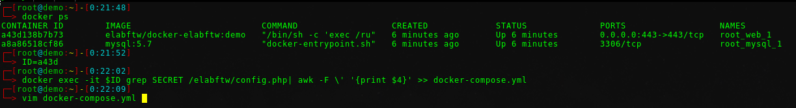

Changelog
Version 5.1.15
WARNING: this release contains a SECURITY BUGFIX. The vulnerability is classified HIGH, so updating is highly recommended!
Fix CVE-2025-25206
bug/minor: import eln: fix links in body. fix #5425
bug/medium: idps xml: allow Redirect binding for sso and POST for slo, instead of hardcoding them. fix #5463
bug/minor: fix teamgroup perm check to patch
bug/minor: permissions: use entity team column to check for admin access
bug/medium: remove api key of user when dissociating from team
Version 5.1.14
No changes in eLabFTW, this is a re-release with a missing commit in elabimg repository for the new USE_PERSISTENT_MYSQL_CONN parameter.
Version 5.1.13
bug/medium: fix steps not imported from template
bug/minor: import eln: actually use provided permissions
The user interface to import .eln files allow to set read and write permissions, but they were not taken into account. fix #5420
feat: allow setting persistent mode for PDO. Set
USE_PERSISTENT_MYSQL_CONNtofalseas an environment variable to disable persistent connections to MySQL. Currently the MySQL connections are persistent. This change was made to avoid the overhead of establishing a TCP connection for SQL requests, but it can cause resources exhaustion on big instances, and in rare cases some firewalls cause improper severance leading to issues for the PHP workers.
Version 5.1.12
bug/medium: eln import: fix issue with resources categories import. fix #5356
bug/minor: eln import: honor userid setting. fix #5382
bug/minor: teamgroups: fix issue with comma in username. fix #5406
bug/minor: templates: fix steps not being duplicated. fix #5404
bug/minor: extra fields builder: fix number type field missing units (fix #5398)
bug/minor: extra fields: fix issue with incorrect groups definition. fix #5369
feat: minor: mask colon (:) for autocomplete searches (PR #5383 by Marcel Bolten) fix #5376
chore: composer: upgrade league/commonmark. fix vuln https://github.com/elabftw/elabftw/security/dependabot/64
chore: set min cross-spawn version to 7.0.5. fix for CVE-2024-21538
Version 5.1.11
bug/medium: eln import: prevent duplication of resources categories. fix #5349. fix #5285
- bug/medium: eln import: fix status and categories for templates
The bug was that experiments never timestamped would have the condition always evaluate to false because you can’t compare NULL with something like that. The feature is adding -t option to target specific teams. fix #5319
bug/medium + feat: cli timestamp: fix and improve sql query
bug/minor: admin panel: fix newcomer banner message not correctly displayed
bug/minor: eln: make .eln valid ro-crate
bug/minor: listing: improve behavior with always show owned parameter
feat: tinymce image upload code revamp, add image plugin/upload-with-drop to templates (#5353)
feat: uploads api: allow filtering archived uploads with api. fix #5323
feat: import eln: display error instead of aborting if file shasum fails
feat: import eln: display checksums of failed imported files
feat: eln export: allow restricting users or resources categories when exporting with export:eln, you can now add -u and -r to include only these users and these resource categories id.
Version 5.1.10
2383e82a0 bug/minor: templates: fix duplicate action missing attributes. fix #5312
90f26ce4b bug/minor: eln: use user defined date during import. fix #5304
4fa676635 bug/minor: pdf: fix missing id in links of links. fix #5311
7b46538bd feat: mass emails: make sure everything gets sent when ungrouped
Version 5.1.9
bffd454cc bug/medium: templates: target permissions not taken into account
4aad67bdd bug/minor: extra fields builder: fix number type not having default
0ca36bde7 bug/minor: scheduler: booking slot limit invalid check
dcdd138ed bug/minor: idps: fix bug editing certs for idp
ed3ab1cac bug/minor: scheduler: prevent warning with empty title value
5f21b7557 bug/minor: timestamp: catch exceptions during auto timestamp
4e7c50311 bug/minor: procurement requests: add missing columns in readAll()
14542a715 bug/minor: eln: make @type property of ./ a string
6e7325e33 bug/minor: import eln: prevent import issue with tags
db8189077 bug/minor: apiv2: fix uncaught error during file upload
8ea3ddc7f bug/minor: idps: fix bug when adding new IDP after editing an IDP
31849307d bug/minor: duplicate: use correct permissions
ff19cace7 bug/minor: mfa: fix pressing enter on input would cancel the form
1ae7778c5 bug/minor: procurement: only list orders that are incomplete
d921a16d8 bug/minor: scheduler: use correct id for link in view mode
846797bad bug/minor: users: prevent change if not necessary on update
1d7886df6 bug/minor: admin panel: change terms Common Template -> Default Template
fe00e1fda bug/minor: logs: output full error to logs
20abb244c ui: team: remove placeholder for Templates
ba5525936 ui: admin panel: add deprecation warning on enforce permissions
c8ae435fd ui: admin panel: move user create tag option in tag manager
b467066aa ux: idp: catch error with invalid input in idp edit modal
689c786f7 ux: procurement requests: make the DELETE action simply change the state
Version 5.1.8
bug/medium: duplicate items: keep category. fix #5258
bug/minor: new version notif: fix link
bug/minor: import: different default target for csv or eln
bug/minor: filter snippet: fix match with case
bug/minor: css: fix caption alignment in view mode
bug/minor: notifications: fix incorrect url for new comment posted. fix #5267
bug/minor: steps deadline: improve step deadlines and their notifications (PR #5264 by Marcel Bolten fix #5142)
bug/minor: 2fa: fix footer and cancel button
bug/minor: metadata: scroll to extra fields after loading metadata
bug/minor: procurement: hide quote column. fix #5195
bug/minor: notifications: fix missing .php extension in body column (JSON) of notifications table. fix #5260 by Marcel
bug/minor: makepdf: fallback to local storage if no storage can be found
bug/minor: tagsteamssync: fix console script to sync tags between teams
bug/minor: custom_id: remove custom_id upon deletion
ux: scheduler: do not ask for comment when creating scheduler event
ui: teamgroups: rename teamgroups to user groups in interface
ui: ucp: rename Database to Resources
feat: audit: skip audit logs for ts_balance
feat: permissions: add filter for team select
Version 5.1.7
bug/medium: team permissions: fix issue with incorrect check
bug/medium: timestamp: take into account the timestamped_at value. fix #5242
bug/medium: duplicate: metadata was not duplicated. fix #5251
bug/minor: templates: incorrect listing. fix #5250
bug/minor: add missing content.css for tinymce skin (#5246 by @MarcelBolten)
bug/minor: export: use tomorrow as end date default
bug/minor: i18n: update en_US.js (#5244 by @ForeverFloating)
doc: import:eln: improve authorship doc
Version 5.1.6
bug/major: scheduler: start/end of events not properly updated (fix #5241)
bug/medium: auth: fix workflow of teamless user requesting access
bug/medium: templates: fix teamgroups not available in permissions
bug/medium: export: fix permission issue when exporting stuff
bug/medium: templates: fix bug where a Template with an attached file could not be used to create an experiment
bug/minor: 2fa: fix form cancel on enter when enabling 2fa
bug/minor: sign: allow signature with only read access
Version 5.1.5
bug/major: saml: prevent empty Name attribute for requested attributes
In the SP Metadata XML (/metadata.php), a change has recently been made to use the user defined attributes, instead of hardcoding them. But in some case, the value was empty, not null, but an empty string, so the Name attribute would be empty, and Shibboleth software that regularly parses SP metadata would choke on it and everything would explode.
This change prevents having an empty Name attribute for the requested attributes in SP metadata.
bug/medium: saml: user identity attributes update during saml
When using SAML auth, if the parameter “Allow users to change their first name, last name, or email address” was inactive (not default), then the user would encounter an error because the app would try and update the user but have no right to do so.
This is fixed by making the update() method of Users public and using it for trusted calls, and moving this check into the patch() method.
bug/medium: fix a bug preventing custom
MAX_UPLOAD_SIZEorMAX_UPLOAD_TIMEto be set (fix #5232)bug/minor: fix save button from toolbar not working for templates
bug/minor: improve handling of incorrect parameters when creating an upload: provide better error messages
bug/minor: tags: better handling of null tag in post request
bug/minor: items_types: add missing order by ordering in readAll()
bug/feat: allow switching editor from resources categories (PR #5234 fix #4810)
bug/minor: fix issue with incorrect blog post link
security: force use of path-to-regexp 1.9.0
i18n: update german translations (thanking Lauritz Bußfeld for his help!)
Version 5.1.4
bug/medium: fix anonymous access The missing value for “scope_teamgroups” user setting of anonymous user was causing a major error and preventing the page from loading. fix #5231
bug/minor: fix warning with access_key being null
bug/minor: duplicate: fix tags not duplicated for experiments
Version 5.1.3
Fix missing comment creation date in PDF (fix #5223)
Handle correctly a string value for category/status when creating an entry (through API for instance)
Fix bug where incorrect category was displayed for experiments templates
Version 5.1.2
Fix issue where Sysconfig panel could not be loaded if instance had 0 uploaded files
Version 5.1.1
Fix issue with Czech translation causing a fatal error on Settings page
Version 5.1.0
Noteworthy changes
Authentication cookies will now be set for users logged with SAML if the instance configuration allows for setting them. Previously, SAML authenticated user would be logged out after closing the browser, now they will have cookies to stay logged in, but only if the instance configuration allows them. (PR #5136 fix #5135). See settings in Security tab of Sysconfig panel.
Improvements with .eln files: .eln archives can now contain a mix of experiments, resources or templates. Exporting an entry in .eln will also include any link they have, and the link of the links too. Importing a .eln will correctly create all entries, too, and honor the links. See new API endpoints api/v2/exports and api/v2/import.
Audit event emitted in PHP logs is now a JSON string
Breaking API v2 changes
/team_tags has moved to teams/{id}/tags. If you have scripts using /team_tags, replace it with teams/current/tags to get the same behaviour.
The POST action for Revisions endpoint has been removed. Revisions are created by changing the entry content, so it doesn’t make sense to expose this action publicly.
New features
Rework of the Import and Export functions (PR #5123): new pages Import and Export in the Profile, asynchronous Export function
See documentation for Import
See documentation for Export
Addition of exclusive edit mode (PR #5127 by Marcel Bolten): allow users to open entries in exclusive edit mode, preventing changes from other users
Add signatures: see dedicated section on blog: TODO
Add action requests: see dedicated section on blog: TODO
Add procurement requests: see dedicated section on blog: TODO
Add onboarding emails (PR #5029 by Marcel Bolten): Allow sending onboarding emails to new users, with a generic template but also a team specific template. And another for sys/admins.
Allow control of client side upload timeout with MAX_UPLOAD_TIME env var (PR #5138, fix #5134)
New CLI command: bin/console teams:export X to export a full team in a .eln
New CLI command: bin/console teams:import to import a full team from a .eln
List attachments: the profile now contains a tab that will list all the attached files from user. See also new endpoint api/v2/users/me/uploads/.
Allow uploading files on experiment templates (PR #5068)
Allow duplicating files when duplicating an entry
Add uploads_filesize_sum and uploads_filesize_sum_formatted to /api/v2/info endpoint
Add Archive button for batch action
Add emoticons to text editor (PR #5025 by Marcel Bolten)
New Batch tab in Admin panel to execute actions on entire sets of entries (PR #5148)
Add Sysconfig setting to select mass email behavior (grouped or not) (PR #5206 fix #4781)
Add Sysconfig setting to prevent users from changing their identity (firstname, lastname and email) (PR #5202)
Display statistics about uploaded files on Sysconfig page (on tab Uploads)
Allow Admins to filter users by team
Support adding media files via upload dropdown menu (PR #5189 by Alexander Minges)
Add media menu to editor (PR #5188 by Alexander Minges)
Add support for listening to uploaded audio files directly in the browser
Use a modal window with export settings on export action
Allow removing text from QR Code PNG export
Add config option for ldap scheme (see https://github.com/DirectoryTree/LdapRecord/issues/732)
Add ID in view mode too
Add support for defining an xml URL with IDP list to populate IDPs from that list, with an auto-update mechanism (PR #5184)
Regroup Local authentication settings into a new “Local auth” tab on Sysconfig panel. Allow disabling completely local auth (fix #5212 - PR #5216)
Add a CSV report button in Admin panel, similar to what the sysadmin has already
Resources categories (aka items_types) now properly honor the permissions, which makes them shareable across teams. Previously they were limited to the team that created them. (fix #5162 via PR #5220)
Enhancements
Allow uploading very big files (> 3 Gb) on S3: increase part size for multipart uploads (PR #5137 fix #5133)
Update the orgid value for users after SAML login, with the value from IDP (PR #5139)
ELN export: add name and description to the ./ node
On user creation after SAML login, create the user with the orgid (PR #5048 by Lauritz Bussfeld)
Use nameid in SAML SLO request (#PR 5077 fix #4964)
Open attachments in new tab
Improvements for links (PR #5073): allow links to experiments on experiments templates
Allow control of changelog regardless of PDF/A setting (PR #5072 by anargam, fix #4969)
Add related links in edit mode too (even if they cannot be edited)
Allow user without a team to select a team upon login (PR #5060)
Add Status to autocomplete in links (PR #5064)
Add archived users to report (PR #5044 by Marcel Bolten)
Fix images in PDFs (PR #5036 by Marcel Bolten, fix #4961)
Bring back the reset 2FA button from Sys/Admin panels
Add the upload id and a link to its json in “More information” uploaded file section
Add note on how to deselect a selected entry in multi select on perm modal. fix #5175
Merge extra fields being loaded with “Load fields” button instead of overwrite everything (see #3214)
Use the SAML provided firstname/lastname to update user attributes upon SAML login (see #4513)
Make the Save icon of the TinyMCE toolbar more visible by moving it as first icon, and using a floppy disk icon
Bugfixes
Fix bug where forced use of MFA would prevent changing email in user panel
Fix bug where filtering on top of Related filter would break
Fix action button to set the time/date to now not working outside edit page
Fix improper initialization of experimentsLinks for itemsTypes
Fix Mathjax in PDF/A (#5028)
Replace incorrect term status by categories in experiments_categories section of api description (PR #5012 by @mhxion, fix #5011)
Honor idp settings for attributes in metadata.xml (fix #5145)
Fix missing update of lastchangeby when a submodel (_i.e._ steps) has been modified
Fix editor not matching content_type (markdown or html) if user setting is different
Fix templates being created with incorrect content_type (fix #5190)
Fix bug where duplicating a template would not duplicate links
Fix URL in pdf footer (fix #5173)
Fix bug where deduplicating a tag would impact tags in other teams with the same tag value (fix #5215)
Fix confusing behavior with permissions set to Teams and users belonging in the same Team
Fix extra fields links to experiments/resources/users not showing name/title in toggle body (fix #5180)
Dev stuff
Add a fixed firstname to users created with the populate script
Improvements by anargam regarding Content-Type of user uploaded content, and user validation logic
Fix composer shadow dependencies (PR #5061)
Use PER Coding Style 2.0
Upgrade Jquery-UI to v14, now without IE support <3
As always, many refactors and improvements in the codebase, that are not particularly useful to list exhaustively here.
Removed the default resource category when a new team is created
Many, many code refactoring and changes, as with all major releases!
Version 5.0.4
Bugfix patch:
use max-height:100% in body_view. fix issue #5003
fix profile statistics and team groups (#4963)
fix query example in api doc (#5002)
fix issue with month long bookings in scheduler (#4991)
Version 5.0.3
Small bugfix patch (#4968).
fix issue where an entry could not be accessed in edit mode if these two conditions were true:
entry (Experiment or Resource) has a file attachment created before version 4.3.0
user has the uploads section display mode set to “table” (non-default)
This is a good opportunity to remind you of the existence of docker exec -it elabftw bin/console uploads:check which will ensure (for non-S3 setups) that all stored files have a filesize value in MySQL. While not strictly necessary to operate, running this command will stop eLab from falling back to reading the value from disk (because it is now available in MySQL), and that means less disk access, which is always good (looking up the filesize on an ext4 filesystem is not expensive, but it doesn’t hurt to avoid it).
Version 5.0.2
Small bugfix patch.
fix bug with custom id value that could not be removed
fix csv report missing has_mfa_enabled column header
fix: prevent deleted user linked in metadata from causing error
Version 5.0.1
Small bugfix patch.
fix issue with empty Users extra field. fix #4946
fix issue with sysadmin could not promote user to admin if not admin in
add autocomplete for metadata key input again (#4932)
Version 5.0.0
Note
Yes, this is a major version bump, but apart from the removal of REST API Version 1, there are no other breaking changes, so the upgrade has nothing in particular.
Breaking change
The reason for major version bump: APIv1 is removed and will display an error message, that cannot be bypassed anymore.
Noteworthy changes
The ability to disable the “Delete” button and deletion of entries by users have been removed. These settings were added before the addition of a “soft-delete” mechanism. Currently, when something is Deleted, the data is marked as being deleted, but is still present in the sql database (and can be restored easily). The disabled button resulted in bad user experience so it is now always available.
The default memory limit for PHP has been raised from 256 Mo to 2 Gb. This has no impact if you already defined it with the env var
MAX_PHP_MEMORY. This will have an impact if you don’t have 2 Gb of memory to allocate. In that case, set that parameter to a more fitting value.The way pagination works has changed, you now have a button to “Load more”. This means that now the “limit” parameter is correctly respected, returning 10 entries if the limit is 10, not 11 as before. This might impact you if you have scripts expecting the old behavior.
The escaping strategy has been changed from sanitizing input to escaping output thanks to the amazing work done by Marcel Bolten in PR #4835. This should fix issue with quotes appearing wrongly from time to time.
metadatafield in JSON output is now interpreted (no longer a string)The experiments are no longer shared across teams if the owner belongs to multiple teams. See complete description of the behavior: https://github.com/elabftw/elabftw/discussions/4908 (PR #4920 fix #4894)
New features
Add “Custom ID” attribute to entities (see #3724)
Allow deleting links pointing to an entry, from the entry (fix #4738)
The “Create” button now displays Experiments Templates in a modal window before creating an experiment
Allow an Admin to add an existing user to their team (PR #4745). This behavior is disabled by default. A new Sysconfig setting has been added to control it.
Display Status list on Dashboard (fix #4715)
Allow transfer ownership of experiments
Add a new set of read/write permissions to experiments templates and resources categories. Now there is one for the template itself and one for the resulting entry created from it. (#4820)
Add a new “Scope” button to easily switch the range of things you want listed: yours only, including your team, or everything you have access to (PR #4812)
Add
tcl,diffandvhdlto syntax highlightingAdd
bin/console uploads:checkcommand to add hash and or filesize to all filesDisplay the id of timestamped experiments in verbose mode with
bin/console experiments:timestampAllow changing the language without being logged in (PR #4850)
Add an “Audit logs” section in Sysconfig panel to display actions such as users login in/out, users to teams modifications, password changes, etc…
Add instance parameter to export audit logs to web server error log
Add instance parameter to prevent Admins from archiving users (fix #4866)
When a user logs in, a notification is added if the eLabFTW instance has been upgraded since the last time they logged in. This notification is web only, no email, and points to the blog post with new features.
Add instance parameter to configure the link to the Chat room in the help menu. Useful if you have your own internal chat system.
Add a filtering input on top of templates listing to filter out results
Add account expiration notifications (#4886). New notifications:send-expiration command that executes every week and send an email to users with account expiring in the next 30 days and their Admins with a list of users expiring.
Add password policy tools (minimum length + complexity)
Set default password minimum length to 12 characters
Greatly improve extra fields search on search page (PR #4731 by Marcel)
Add custom_id to search query syntax (#4898 by Marcel)
Enhancements
Add “Admin” text on teams where user is Admin in Sys/Admin Panel when listing users (fix #4740)
Archiving a user now gives the choice to also Archive/Lock their experiments (default to No)
Archive action no longer automatically locks and archive experiments
When adding tags, keep focus on the input element after addition
Modify “Search term” to “Search user” in remote directory search interface
Display categories everywhere, make Status appear different than categories and more aesthetic changes (PR #4720)
Allow deletion of a timestamped experiment
Allow “caption” html tag in body (used by tinymce for table title)
Remove the “Anonymous visitors can see database items” Team setting (fix #4663)
Make the “Return to top” button appear after one vertical height scroll (fix #4076)
Improve thumbnail generation: consume less memory and avoid issues with some PDFs (PR #4711 by Nico and Marcel)
Set the default ordering by last modified instead of date
Add steps related events to changelog
Add a button to display allowed email domains on register page (prevents issue with very long list)
Display multiple values in extra fields on several lines
Bring back the even/odd background color in tables
Order tags alphabetically
Add YAML to list of code languages
Keep the cursor at the same spot when selecting an entry in show mode (PR #4824 by Marcel)
Add a modal window before the blockchain timestamp action. Rework the text, too.
Add a close button to favorite tags and todolist panels.
Display more suggested tags and set them in a collapsible box
Add Category and Status to pdf export
Use JSON data to timestamp instead of PDF/A (fix #4757 via PR #4830)
Add Custom ID to link autocomplete
Increase timestamp timeout to 30 seconds
Add
includeArchivedto query string for users api endpoint (fix #4815)Stop entries from jumping around upon selection in show mode (#4824 by Marcel)
Allow repositioning extra fields by dragging them (PR #4851)
Better CSV export with more columns (category, status, tags, colors, custom_id)
limit query parameter now correctly honored (was returning limit + 1 before)
UI/UX fixes (PR #4833 by Marcel)
Always display main text + extra fields in toggle body in show mode
Improved .eln import/export with more fields taken into account such as Status and Category
Prevent the text editor (Tiny) from transforming a #word in title
Add informative message to explain the purpose of
is_ownerparameterAdd full export menu to templates
Improve API specification
The extra fields of type Experiments, Resources, or Users are now only storing the ID, so their value is a number, not a string anymore (fix #3857)
Create link automatically upon addition of extra field link (see #3857)
Make images fit screen at all times (fix #4418)
i18n
Fix missing translated strings in interface
Add Czech language (#4749, thanks to Ondrej Kuda @ondrej-kuda for help with the translation)
Fix french translation for linked/related entries
Bugfixes
Fix items_types api spec (fix #4696)
Fix incorrect page redirection when duplicating a template from team page
Fix team events appearing twice in view mode
Fix links being removed by prune: commands (fix #4761)
Fix field builder not changing inputs correctly on field type change
Fix Single Logout token decoding (fix #4796)
Fix issue when importing a template .eln as an experiment
Make the uploads migrator tool to s3 fix links in body too (fix #4777)
Fix missing items category in import menu in dashboard
Fix incorrect display of use_isodate in UCP (fix #4772)
Fix incorrect orgid type in api spec
When sending mass email, set the To: to the sender
Fix issue with user validation after SAML login
Fix collapse/expand behavior in show mode by Marcel
Fix incorrect reload of Mathjax upon layout switch (fix #4809)
Fix Keeex config not present on new installs
Fix archived related entries not showing up (fix #4816)
Fix offset not being reset on filter addition in show mode (fix #4826)
Fix newline being added on top of pagebreak element (fix #4538)
Fix incorrect behavior of extra fields builder (fix #4184)
Fix incorrect behavior with SAML users
Fix collapes/expand behavior in show mode
Fix required label not appearing on all elements (fix #4865)
Move tools:genkey to bin/init, was not working with bin/console on fresh container
Fix api access of entity with Organization permission (fix #4928)
Fix issue with special characters in link input (#4917)
Fix expanded and selected state of entities (#4913 fix #4889)
Dev corner
Use yarn berry with PnP (see PR #4698)
Use upstream OVE instead of our UMD building repo
Update TinyMCE to v6, imagetools plugin is no more, but new plugins are added, such as auto URL or accordion
Update Chemdoodle and change how it is imported/used
Use peggy cli to generate script (PR #4746 by Marcel)
Fix round edges on button (PR #4744, #4742 by Marcel)
Improve code of yarn plugin to copy the tinymce files (PR #4713 by Marcel)
Fix issue with Storage/Memory (PR #4674 by Marcel)
Add html validation to cypress tests (#4688 by Marcel)
other changes by Marcel #4867, #4872, #4887 and plenty others
Remove phan and rector
Add phpstan and psalm to devDependencies and execute them with composer
Version 4.9.0
Breaking change
This release contains a breaking change for users of APIv1: the response will be an error unless apiv1_is_dead query string is added. APIv1 support will be completely dropped in 5.0 (likely the next major version). See https://github.com/elabftw/elabftw/discussions/4653 for more information.
Deprecation
The format of API keys has slightly changed to work around a design issue (fix #4617). Currently the change is backward compatible, meaning that existing keys will continue to work. It is recommended to generate a new key for faster response times especially if you’re not Sysadmin. Old keys with previous format are now deprecated and need to be regenerated before 5.0.
New features
Rework of Category and Status for Experiments and Resources (see blog post: https://www.deltablot.com/posts/release-490/) (PR #4614) (see discussion: https://github.com/elabftw/elabftw/discussions/4613)
Api keys now show a “Last used” timestamp, so their use is recorded and it becomes easy to see if the keys are in use or can be deleted
Add possibility for a Sysadmin to disable 2FA for a user (fix #4486 via #4646)
Allow the preview of Markdown and Json attachments (PR #4042 by Marcel and Nico)
Add JSON in highlighted languages selection list
Allow linking to experiment/resource/user from Extra fields (fix #3857 via PR #4616)
Enhancements
Flatten the mentions and comments fields in .eln export
Title can be easily edited from view mode now
Add /healthcheck.php page to check if all is alright. Other monitoring endpoints (/nginx-status, /php-status, /healthcheck) were not checking the MySQL access, this one does.
Add categories to dashboard
Force inclusion of attachment files for PDF/A
Make team selection dynamic on team select page after saml login
Make search page help translatable and fix untranslated strings (fix #4659)
Add missing metadata column on items_types and rename to Resources categories
Allow browser to pass cookies when requesting webapp manifest (PR #4691 by @anargam)
Bugfixes
Fix bug where booking slots could appear bound to entries (fix #4654)
Fix bugs on Team page when no Resources is bookable
Fix deadline notifications for Steps
Fix incorrect redirect with Saml auth to selected page (fix #4649)
Fix Cancel button in 2FA setup page
Fallback to configured instance storage param if no storage param is present (fix #4615)
Fix bug where it was not possible to edit a booking slot if max number of slot was reached (fix #4679)
Fix bug where extra field would stay readonly when readonly property is present and false (fix #4693)
Fix fatal error when metadata is incorrect (see #4694)
Dev corner
Remove APIv1 test code
Fix test coverage results with correct merge between suites (PR #4655 by Marcel Bolten)
Improve code for toggle pin buttons (#4623 by Marcel and Nico)
Substitute some multiple whitespaces with single whitespace (#4622 by Marcel Bolten)
Improve spacing on Dashboard (#4621 by Marcel Bolten)
Populate action now uses tags that make sense instead of the generated ones (#4619)
Add TwigCS to CI pipelines (#4595 by Marcel Bolten)
Version 4.8.6
Breaking change
This concerns only devs, but bin/console dev:populate is now bin/init db:populate. This change was made to avoid issues related to the loading of Config table by bin/console.
Bugfixes
Fix issue with Export from Profile failing when deleted entries are targeted
Fix issue where archived entries appeared as links
Fix bug where a user could not cancel an event on the scheduler
Version 4.8.5
Bugfix
Fix issue with nginx server and new brotli code
Version 4.8.4
This patch release focuses on bugfixes with a few small enhancements. It comes nearly a month after 4.8.3 and doesn’t contain database update step. All users should update to this version.
Bugfixes
Fix issue where it was not possible to remove “is_owner” from a user/team couple. Also add this to the api doc.
Fix uploaded files cannot be unarchived (fix #4593)
Fix incorrect display of entrypoint in UCP (fix #4594)
Fix error message shown when canceling event (fix #4569)
Trim email input (fix #4590)
Add missing Save/Cancel translations
Fix issue where orgid attribute from SAML was not properly checked (fix #4548)
Fix bug where archived filter didn’t work correctly
Remove format: date-time (PR #4543 by Mahadi Xion)
Enhancements
Allow display of SVG files in browser (fix #4563)
Display archived links with an icon (fix #4591)
Improve UX on scheduler event edition/creation (fix #4569)
Prevent a Sysadmin user from being archived
Dev
Interpret is_sysadmin in populate config YAML file for a user
Version 4.8.3
A few bugfixes related to scheduler in here.
Bugfixes
Display “Cancel event” menu if user is Admin even if event is not cancellable
Fix bug where a “Only owner” permission was not properly honored
Only show book button if entry has is_bookable truthy
Enhancements
Add event_duration_minutes to the scheduler export CSV
Add the selected item on the scheduler page with a button to deselect it
Version 4.8.2
10 bugfixes in this patch release! No database update necessary.
Bugfixes:
Fix bug where PDF with multiple entries would not display images in the text (fix #4524 via PR #4528 by Marcel Bolten)
Fix bug where a notification for deleted event (in calendar) would be sent to the wrong recipients
Fix bug where clicking “Show Archived” would also display experiments from other users in the team (fix #4525)
Fix tag autocompletion not working after adding a tag
Fix password save not working when editing a password on Sysconfig page for SMTP or TSA
Fix issue with thumbnail generation of PDF generated by iTextSharp (fix #4517)
Fix dashboard not honoring user setting for displaying team experiments or not
Prevent loading null metadata (fix #4516)
Fix incorrect description of GET /api/v2/users
Fix bug where it was not possible to enter a floating point number in extra field of type number
Enhancements
Add Content-Size header to exported files (PDF, JSON, QRcode, …)
Dev
Use same seed data for dev and tests (PR #4519 by Marcel Bolten)
Use @yopmail.com email addresses for the fake accounts
Misc
Add a GOVERNANCE.md file
Reach Silver level on OpenSSF Best Practices (https://bestpractices.coreinfrastructure.org/en/projects/2766)
Add responsible disclosure Hall of Fame in SECURITY.md
Version 4.8.1
Bugfixes:
Display any “extra” data in metadata that are not handled by eLabFTW (fix #4256)
Fix bug with sending email to all active users of instance from Sysconfig panel
New features:
Add readonly attribute to extra fields (see #4256)
Version 4.8.0
Breaking changes:
The backupzip endpoint of APIv1 has been removed. It will come back as a console script.
Bugfixes:
Fix incorrect selectable state detection on Scheduler (would allow selecting a slot when no items are selected, which was confusing)
Bring back borders on all tables (fix #4436)
Fix deadline notifications on steps not working
Fix lists and links display in pdf (fix #4463)
Fix issue with invalid date format on chromium based browsers (fix #4412)
Fix issue with error message shown to user deleting a unique tag (fix #4420)
Fix glitch when deleting entries in show mode
Fix incorrect check for is_sysadmin during team edition (fix #4405)
Fix lock icon on templates not getting updated correctly (fix #4388)
Fix issue issue where extra fields were not displayed if there was groups with no elements inside. fix #4387
Fix changelog view for templates (fix #4393)
Fix issue with extra fields not shown if ungrouped field was deleted (fix #4386)
New features:
Allow archiving entries and uploads: archive action will force lock and hide from listing
Allow displaying archived entries by toggling a box
Allow toggling the Main text section like the other sections of an entry
Add JSON export in Export menu
Add api/v2/info endpoint with information about the instance. See https://doc.elabftw.net/api/v2/#/Info/get-info
Improve booking system and options. See #4474 and https://doc.elabftw.net/user-guide.html#booking-resources. Fix #4023
Improve required extra fields handling. Fix #4060. Add red star, red border if invalid (empty), and a switch on the builder
Add new extra fields types: time, datetime and email (fix #4411)
Add “Now” button for date, time and datetime extra fields (see #4411)
Work in progress: Add a Dashboard (PR #4419)
Allow transferring ownership of a template to another user
Add suggested tags in edit mode
Add SQL to list of highlighted langs
Improve revisions system (#4460). Make them accessible from APIv2. Add possibility to display a diff between revisions (fix #1667)
Add legal notice configuration (Impressum). fix #4053). Also allow changing the titles.
Add differentiation for English UK(GB) and US
Add import/export in console (see PR #4439)
Accessibility: add user option to disable shortcuts (#4427)
Accessibility: add status role for notifications (see wcag 2.1 4.1.3)
Add scissors and centrifuge symbols (fix #4413)
Sysadmin features (PR #4404): allow filtering only admins, allow targeting population of users for sending mass email, allow setting custom error message when local account creation is required
Archive experiments during user archival (fix #3632)
Add archival possibilities (PR #4403 fix #521)
Add “Load fields” button to load extra fields from a template or items types
Allow user deletion by sysadmin. Allow unvalidated user deletion by admin (fix #4380)
Allow adding units to extra fields for numbers inputs (fix #3518)
Add a button to easily delete an extra field
Enhancements:
Trim firstname/lastname from spaces during user creation (fix #4480)
Make the editable text bigger by removing a leftover custom CSS rule forcing it to 10pt
Add a margin at the bottom of the editor and resize it automatically
Correctly reload timestamp info/files after timestamp action
Add a note to instruct user to select an item on scheduler if none are selected
Modifying an uploaded file, adding a step or link will change the last modification date of the entry they belong to
Remove page generation time from footer, add link to deltablot and version blog post
Add Reply-To header to emails sent with email feature so recipients can directly reply to the correct person. Also add a note about it in the email.
Make the change password action through api require the current password like the web ui does
Add focus to multi factor input on page load
Allow an Admin to promote someone else Admin (fix #4434)
Improve UX when clicking “unset” on orgid column in user list
Rework how future bookings are shown on the item view page
Make extra fields search case insensitive
Make favorite tags stand out with gold background
Fix incorrect wording for “Show related experiments/items”
Allow style HTML attribute in video tag (PR #4426 by Sammy Jenkins)
Rename “Database” to “Resources”
Improve and correctly use font resources (fix #4410)
Rename “Only me” to “Only owner”
Add a name attribute to image inserted in text so its name can be found when downloaded (fix #3797)
Hide switch editor menu entry in view mode of template
Make the pinned templates icon clickable in listing mode (fix #4392)
Flatten the author references in .eln files
The extra_fields and json editor are now better synchronized (fix #4343)
Dev stuff:
Translation files for javascript (with i18next) are now generated automatically from bin/console dev:i18n4js. So the files do not need anymore to be edited manually.
Get rid of the old generateSecretKey file and the install/ folder, also remove the index.php at root
Add tests for the Commands namespace
Cypress now runs on circleci (PR #4484 by Marcel Bolten)
Docker image changes:
Update to alpine 3.18
Fix issue with AWS key containing a slash (fix #4471)
Fix set_real_ip not working with CIDR notation
Configure nginx to serve only from a defined list of files for PHP
Add more security related compilation flags to nginx
Pin the two custom nginx module to known versions
Add CI/mon to enforce outgoing connections during build
Only install prod js dependencies during build
Changes in the example docker-compose file for cap_drop and cap_add: drop all and add only required capabilities
SYSADMINS: The last change means you might want to adapt your elabftw.yml file (docker-compose.yml) to reflect that change: https://github.com/elabftw/elabimg/blob/eca0023a457880fff9ffcbe01ee2582fda6a4c77/src/docker-compose.yml-EXAMPLE#L39-L49
Version 4.7.0
Bugfixes:
Fix APIv2 documentation/specification for uploads
Fix issue with viewing template without mode=view in URL
Fix annotate image function (fix #4361)
New features:
Add cookie related settings: cookie validity time, default behavior of Remember me checkbox and allow completely removing the possibility to set a cookie
Allow duplication of templates from view/edit mode
Enhancements:
Display error message to user in case of invalid JSON payload on API call
Right align the sort icons on item table
Add border on the table columns
Move the Save and Delete buttons in Items Types page
Allow Sysadmin to add user from remote directory
Fix display of file input for tpl import
Dev corner:
Upgrade Symfony to 6.3
Upgrade dependencies
Remove hardcoded IDP from dev:populate function
Fix misspellings in comments (#4362 by Dimitri Papadopoulos Orfanos)
Version 4.6.1
Bugfixes:
Fix LDAP password not being saved on change (fix #4359)
Fix incorrect count of entries on the Teams page of Sysadmin panel
Fix bug where giving Admin rights to a user was not possible when not Admin but only Sysadmin
Fix de-associate team/user action button not shown for other users of the logged in team
Internationalization
Update German, Indonesian and Chinese translations
Version 4.6.0
Check out the blog post to read about the new features.
The changelog below is mostly accurate but might be missing a few things here and there.
Breaking changes:
Remove the submit keyboard shortcut
New features:
New and improved user interface (#4221 and many other commits)
Add possibility to revert a db:update schema upgrade using db:revert
Add keyboard shortcuts to focus on the search bar (s) or toggle the favorite tags (f) (fix #4282)
Add option to disable S3 TLS certificate verification (PR #4278 by Niels Cautaerts, fix #4259)
Make the dev:populate command a production one and allow setting custom experiments/items
Allow saving from ChemDoodle to RXN file format
Add orgid to users so they can be matched with internal organization id during SAML auth
Allow querying a remote directory web service to fetch users that Admins can then add (#4238)
Add bin/console experiments:timestamp for automated bulk timestaming
Add support for playnig attached videos in webm and mp4 formats
Add support for Keeex.me action during timestamping
Allow sending emails to teamgroups from the team/email page (PR #4320)
Allow filtering by tags from APIv2
Allow grouping extra fields in togglable sections (PR #4330 fix #4230)
Enhancements:
If the search result contains only one entry, redirect to it directly (PR #4283 by Marcel, fix #4224)
Make the default experiments permissions settings on user control panel work with full options
Add requested attributes to SAML metadata (fix #2740)
Allow using all list styles (fix #4281)
Only show visible teams in permissions modal
Use Sun-ExtA font in QR PNG so CJK characters are shown
Honor CJK user setting for QR PDF (fix #4270)
Improve the “Add deadline” UI in steps
Display the maximum number of revisions stored by server on revisions page
Make the IDPs accessible from API
Make Admin role tied to a team, not a user (#4264)
Prevent top menu entries from wrapping and taking multi lines
Use SVG for logo in header
Align navbar menu items with the eLabFTW logo (#4205 by Filipe Maia)
Add link to api documentation in helper/community menu
Change userid column type to int in uploads table and add indices (PR #4024 by Marcel)
Display the maximum file size allowed on upload form
Display custom json stored in metadata in view mode (fix #4256)
Allow changing uploaded files name and delete it from view mode
Bugfixes:
Fix incorrect “Copy AA sequence” in DNA Editor (PR #4265 by Marcel, fix #4261)
Remove arrow on multiple select
Don’t interpret the Basic Authorization header as an api key (fix #4234)
Remove duplicated tag input from advanced search page (fix #4217)
Prevent archived users from using the api (fix #4287)
Fix issue when adding link to entity with same id (fix #4291, fix #4275)
Fix incorrect handling of deletable_xp general config (fix #4272)
Fix issue with unfinished steps from deleted entries showing up in todolist with team scope (PR #4322 by Marcel, fix #4317)
Fix GET apikeys openapi spec
Container changes:
Add /nginx-status and /php-status monitoring endpoints protected by STATUS_PASSWORD env var
Add /php-ping endpoint to query the status of the php service
Allow modifying the keepalive_timeout nginx config
Add keeex container example
Dev corner:
Improve on PSR-4 (#4255)
Remove 3Dmol notrack code as it has been removed from upstream
Get rid of jquery.rating.js and use pure SCSS solution for star rating
Some major updates in libs like 3dmol, ZipStream and Fullcalendar
Update dependencies for extended search (#4215 by Marcel)
Improve LdapAuth class (#4197)
Add tests/clean.sh script
phpstan now officially managed by composer
Add codespell action in CI (PR #4338 by Yaroslav Halchenko)
Add .mailmap file for mapping author’s emails better (PR #4336 by Yaroslav Halchenko)
Version 4.5.14
Bugfix:
Fix the write permissions modal not displaying the correct selected values when opened.
Version 4.5.13
Re-release of 4.5.12 correctly tagged. Previous version was including code from the dev branch! If you already upgraded to 4.5.12, stay on it until 4.6 goes out.
Version 4.5.12
Bugfix:
Change pdf font to increase coverage of special characters rendering
Enhancement:
Prevent accidental scroll while number input is selected to change the content
Version 4.5.11
Bugfixes:
Fix ZIP import of experiments with a title longer than 100 characters and attached files
Fix ELN import of experiments as templates
Fix MySQL schema update 57 (PR #4202 by Marcel)
Upgrade webpack to latest version for CVE-2023-28154 (not impacting production code)
Version 4.5.10
Bugfix:
Fix bug where granting read permission to a team would also grant write permission. Fix #4187
Version 4.5.9
Bugfixes:
Fix titles not being broken down if devoid of spaces in show mode
Fix revisions page url in changelog of pdf/a not working properly
Version 4.5.8
Bugfix:
Fix permission issue on DELETE action
Version 4.5.7
Bugfix:
Fix possible issue with some special characters in DB_PASSWORD
Version 4.5.6
Bugfixes:
Force borders on tables without borders (see #4145)
Fix template not loading in UCP if locked
Remove the temporary disabled DELETE user action button
Fix todolist item PATCH action
Fix apiv2 specification for experiments_templates PATCH (#4156 by Killian)
Version 4.5.5
Bugfix:
Fix notifications not being sent (fix #4154)
Enhancements:
Force verification of sha256sum during eln import
Version 4.5.4
Bugfixes:
Fix display of multi select extra fields (fix #4144)
Remove teamgroup filter from main page (was not working anyway). This feature will come back in another form.
Use the date during ELN import
Fix links to images in body during ELN import
Make sure sha256sum is present in zip/eln exports
Fix write permissions for teams on entities
Version 4.5.3
Enhancements:
Improve message on changelog for body
Show message about who locked an entry and when
Use flexbox for tags
Bugfixes:
Add missing extra fields from templates in UCP and Items Types in Admin panel
Fix incorrect size calculation for importing items
Fix issues with templates write permissions
Disallow linking to itself
Skip creation of changelog entry if body is the same (fix #4131)
Note:
Zip export no longer includes CSV file
User deletion is disallowed until some things can be improved
Version 4.5.2
New features:
Add a button to directly import a json file into the json editor
Enhancements:
Show an error message if user tries to import a file that is too big
Allow edition of title in event modal (on scheduler) (fix #4052)
Bugfixes:
Fix bug where anonymous user could not see anything after login
Fix display bug where teamgroups users would appear overlapping when on several lines
Fix the github issues forms
Fix issue with uploaded images in the body pointing to wrong place after a zip import (fix #3853)
Fix issue after import with files with the same name being overwritten (fix #3853)
Allow border attribute on table element (fix #4066)
Fix issue where deleted entries would keep showing up as links
Version 4.5.1
New features:
Add team level announcement (fix #4065 via #4115)
Add option to disable SMTP certificate verification (fix #4074 via #4112)
Enhancements:
Add checksum verification for orcid (fix #4041 via #4117)
In scheduler, allow clicking an event without selecting item first
Add the team name in user created notifications messages
Improve items types deletion message
Bugfixes:
Let admins have write access to locked entries
Fix and harmonize tooltips (#4113 by Marcel)
Fix issue with quotes in qr pdf (fix #4082 via #4108 by Marcel)
Prevent accidental deletion of experiments through status deletion through team deletion
Version 4.5.0
Blog post: https://www.deltablot.com/posts/release-450/
New features:
Major overhaul of permissions system allowing more granular settings (#3993)
Add description field to custom fields defined in metadata (fix #3856)
Allow users to select several options with custom fields dropdown menus (select)
Add an option to hide main text so only extra fields are left (#3989 by Marcel)
Allow setting the ldap attribute used to lookup the user: users can now login with their ldap username for instance (fix #3359). Several attributes can be set, separated by spaces.
Add tags:teamssync command to synchronize tags between teams
Add metadata extra fields builder user interface (#3994)
Add a way to track the number of timestamps left by setting an initial value manually, a notification will also be sent daily to sysadmins
Add strikethrough button in toolbar
Add prune:experiments|items|uploads to remove completely deleted entries
Fix a bug where users could not edit their own email
Fix pin experiment without write access (fix #4072)
Fix bloxberg not working with items (fix #4070)
Select tags with distinct sql keyword (fix #4069)
Fix issue when a user’s team is changed and user is still logged in (fix #4051)
Add a way to track number of timestamps left (#4057)
Enhancements:
Anonymous sharing is now revokable and using a specific access key rather than the elabid
Allow admins to create tags in their team from the Tag manager panel
When a step is edited, also replace it in the body of the entity
The timestamp warning about cost is now only shown for non-free TSA, a description is added, too.
Record the toggle lock action in changelog
Now only Sysadmin can edit firstname/lastname/email of users
When a step is edited, also replace it in the body of the experiment
Bugfixes:
Fix documentation bug in api v2 GET uploads/{ID} in binary format (fix #3983)
Fix word-break in show mode
Fix issue with locked items in certain conditions they might not appear in the advanced search results (fix #4032 via #4035 by Marcel)
Fix issue with tags not shown in search page select after a search
Fix regex for ORCID (fix #4041)
Fix experiments export from profile by non admin user (fix #4037)
Fix sysadmin report (fix #4031)
Add Content-Type header to DELETE operations in apiv2 doc (fix #4085)
Fix issue with locked/unlocked items in search (PR #4035 by Marcel, fix #4032)
Fix linked entries not shown (fix #4050)
Dev:
Use enums instead of factories
Use more enums where relevant
Update libraries
Remove need for config.php file, use php env directly
Version 4.4.3
Bugfixes:
Fix sync:links function (#3988 by Marcel, fix #3982)
Fix error during deletion if body is empty (#3987 by Marcel)
Hide overflow in OVE preview (#3986 by Marcel)
Enhancements:
Make newly created templates pinned by default
Documentation:
Add documentation on using Swagger UI to interact with local dev server (in apidoc/v2/README.md)
Improve description on read_upload for python lib (see #3983)
Version 4.4.2
Bugfixes:
Prevent a zip filename with too much characters from title. fix #3966
fix relative links in pdf output. fix #3976
fix some apiv2 Location headers after POST. fix #3974
Version 4.4.1
Bugfix:
fix issue with “Back to listing” button when coming from search page. fix #3968
Version 4.4.0
General note: updating to 4.4.0 from 4.3.0 should not cause any issue during the db:update step. It is highly recommended to update to this version so users can benefit from the bugfixes and new features.
Breaking changes:
Users that use Markdown syntax will have all their experiments labelled as markdown for “content_type” (the rest is labelled “html”). So they might have an issue with experiments that they own that are not in markdown. In that case, they can fix it by going in edit mode of the experiment, clicking the top right menu (three vertical dots) and selecting “Switch editor” two times. Then save the experiment.
Bugfixes:
Fix hidden teams not showing up in Add team menu
Fix mass email from team page using user’s email/name instead of the instance’s
Don’t restrict image size in body (fix #3800)
Fix incorrect semver comparison in Sysconfig Panel
Fix event deletion notification settings not honored
Fix filename download with non-ascii parameters
Fix filename upon save after displaying it (fix #3797)
Remove deadline when finishing a step
Fix date parsing in APIv1
Fix displaying revisions requiring write access instead of read access (see #2304)
Fix codesample plugin of tinymce clashing with prismjs (fix #3712)
Fix bug where user would end up without a team after login through saml/ldap and auth service sends team information and team is created at that moment
Fix bug where the extra fields defined in metadata would appear duplicated after save of the json code
Enhancements:
Add currently logged in team in user menu
Display number of timestamps over the past 30 days on Sysconfig Panel
Add a new “Sort” menu in show mode with human readable labels
Prevent browser autompletion on Team page of Sysconfig Panel
Allow toggling pin mode in edit and show modes
Visually separate tags in pdf export
Add more columns to CSV scheduler export
Make “Full syntax” link on search page appear like a link
Improve user interface in UCP > Account
Set the default behavior to “Select team” for SAML/LDAP login
Use urlencode on password of smtp to avoid issues with special chars (fix #3748)
Import metadata column of CSV as metadata (fix #3055)
Force including attached files in timestamp pdf (fix #3729 via #3732)
Add toggle body button to links
Display 2FA status and userid of users as badges when listing them in Admin or Sysconfig panels
Default value for PDF/A option changed to 0 to prevent issues with black background PNG files
Templates now can be “Favorite” to be displayed in the Create dropdown
Allow following a link from an external document without having to re-login (fix #3749)
Allow setting a file comment through Apiv2 file creation (fix #3848)
Add a way to filter bookable items by category (fix #1673)
Add live search on scheduler dropdowns
Add a new export menu in view mode
Let user select PDF/A format directly in the export menu, remove the user option
Add possibility to create a zip with PDF/A pdfs
Display team in template listing (fix #3855)
Always save a revision if none exist (1st save)
Remove the font-size in default template (fix #3927)
Make error notifications stay visible longer
Make text editor toolbar sticky (will stay visible when user scrolls down)
Rework how pdf are displayed, more compact layout
New features:
New version for REST API: APIv2, see documentation: https://doc.elabftw.net/api/v2/
Allow switching team from user menu (fix #3842)
Generate a log event on user login/logout
Add user account validity date
Add new compact display option for attachments with a button to toggle it easily
Add possibility to link to an experiment (previously only links to items were possible) (via #3728 by Marcel Bolten)
Add option for LDAP auth to let user select team upon creation (previously only for SAML)
Add visibility and groups filters in show mode (fix #2294)
Add owner filter in show mode (fix #3799)
Allow multiple molecules in Chemdoodle area (#3746)
Allow saving molecule/reaction in .chemjson or export to PNG
Make timestamp archives immutables (fix #3656 via PR #3736)
Allow changing directly start and end date of scheduler event
Allow users to export their experiments from their profile (see #3726)
Add “Show more information” entry in uploaded file menu
Add new dropdown menu on top right (PR #3718)
Add possibility to customize the Support link in help menu
Allow import/export of ELN files
Allow users to import files
Allow display of uploaded txt files (via #3626 by Marcel)
Add button to copy step body into main text with a link that will highlight the step (fix #2407)
Allow users to use templates in markdown (fix #3070)
Add a markdown template for teams as default template
Add menu entry “Open in NMRium” for .jdx files
SAML: add setting to allow duplicate name attributes (fix #3867)
Add a changelog for all entries to record more changes than just the body with the revisions system
Add blank_on_duplicate attribute to extra_fields in metadata
Add created_at, timestamped_at and locked_at to extended search (#3960 by Marcel)
Allow using the API from an external host with javascript (see https://github.com/elabftw/elabapi-javascript-example#readme)
Add dynamic sort for tables (#3890, #3852 by Marcel)
Add white square as user defined symbol
Dev corner:
Use APIv2 for internal calls, this resulted in a lot of code being deleted, which is a good thing.
Coverage data in html now retained by CircleCI in artifacts section
Use the Docker image for CircleCI
Use cache for php-cs-fixer
Fix issue with php-cs-fixer where excluded folders were not excluded
Do full test suite (including api) in CI
Use codeception/c3 to get line coverage of REST API calls
Fix psaml never finding any issue because of incorrect configuration
Add sonar-project.properties file for SonarQube use
Use enums (new PHP 8.1 feature)
Add REST API test to automated test suite
Lots of code rewrite, as always ;)
several contributions from Marcel Bolten that might not be mentioned above!
several other things that are not mentioned above, because the changelog is pretty big with 314 commits!
Version 4.3.10
Bugfix:
Fix recently introduced issue during update to schema71
Version 4.3.9
Bugfix:
Fix issue with date updating through REST API
Version 4.3.8
Bugfixes:
Fix case sensitive recognition of image extension (fix #3720 via #3725 by Marcel)
Fix tags from another team not being searchable (fix #3721)
Fix MySQL error on invalid tag search
Enhancements:
Set PDF/A setting OFF by default in new installs as it prevents transparency on PNG files in PDF. (see #3713)
Add name of timestamper on timestamp archive file comment
Version 4.3.7
Bugfixes:
Fix steps deadline approaching notification only working with email not web
Fix tinymce mention autocompletion (when pressing ‘#’) in tables (PR #3709 by Marcel, fix #2695)
Fix issues with tinymce image tools saving procedure (PR #3659 by Marcel, fix #3658)
Enhancements:
Add a position key for metadata extra_fields so ordering can be done (PR #3699 by Marcel, fix #3056)
Version 4.3.6
Bugfixes:
Fix update issue with databases enforcing primary keys (e.g. DO cluster)
Allow admin to unlock entry, and allow unlock timestamped (fix #3677)
Allow styl and class attributes on div and h{1,6} (fix #3667)
Enhancements:
Vertically align “Show related” text with icon (#3675 by Marcel)
Fix gap in lists (#3674 by Marcel)
Fix attached files not getting imported with zip import (fix #3671)
Allow pasting tables with background color
Version 4.3.5
Bugfixes:
Fix issue with logging out with some SAML identity providers
Version 4.3.4
Bugfixes:
Fix merged cells in tables (fix #3644)
Fix pdf failing with many images (fix #3627 via PR #3635 by Marcel)
Fix deletion related logic
Fix search containing “-” character (PR #3603 by Marcel)
Enhancements:
Allow more image types in pdf (fix #3647 via PR #3649 by Marcel)
SAML: allow to input text on entityId
Version 4.3.3
Bugfixes:
Fix improper handling of the query when looking for a tag that doesn’t exist in current category
Fix metadata not getting saved from editor (fix #3600)
Fix template destroy on team page
Fix template actions on team page when no items are bookable
Fix issue with pdf stopping after ‘<<’ (fix #3032)
Enhancements:
Improve metadata editing experimence by loading it by default
Make the related links blocks togglable in view mode
Make the app more responsive (wider) and decrease padding for small screens
Allow displaying longer template titles in UCP
i18n:
Update German
Version 4.3.2
Bugfixes:
Fix issue with downloading files with non ascii characters in the name
Prevent deletion of users that own items
Don’t show the delete button for the team you are currently logged in (fix #3597)
Version 4.3.1
Bugfixes:
Fix mathjax (fix #3593)
Fix notifications not being sent if container was running with default user (fix #3594)
Version 4.3.0
Breaking changes:
Completely drop support for non-Docker installation method, see why.
Require MySQL version 8.0. If you are running MySQL version 5.7 or earlier, you might run into encoding issues. One workaround would be to export your data, do the mysql upgrade and re-import your data in UTF-8.
A new mandatory configuration option (environment variable) SITE_URL is needed. Edit your configuration file (/etc/elabftw.yml by default) and add a new environment variable SITE_URL with a value that corresponds to the address for the instance (including the port if not custom). If this value is not set, the container will not start. This was previously an optional setting in the instance main config, but it was causing issues, see #3319. (PR #3323). Example:
SITE_URL=https://elab.example.org
Important changes:
When deletion is requested, the entry isn’t really deleted but its state is set to deleted. It is not possible anymore to actually delete something . (PR #3302)
When an uploaded file is replaced by a new version, the previous version has its state changed to archived and is kept around.
New features:
For sysadmins:
You can now configure S3 storage for uploaded files (PR #3281) (and use bin/console uploads:migrate)
Add uploads:prune command to remove deleted files from database and filesystem
The db:update command now displays important messages at the end
Add cache:clear command to clear cached files
Allow user to request access to a team after SAML authentication (issue #3244, PR #3246)
Show MySQL version in sysadmin page (#3509 by Marcel)
Add a timestamp monthly limit (#3512)
For admins:
Allow export of data from the Admin panel: experiments, items or scheduler data (PR #3445) (fix #3386)
When an event is deleted from the scheduler, Admins get a notification
For users:
Allow searching for entities in API (issue #3264, PR #3308)
New notifications system (#3363)
Revamp completely the search interface, and allow complicated search queries, mainly by Marcel Bolten (PR #3247, PR #2975, fix #2677, PR #3555, #3554)
Add import link from link function (#3488)
Allow searching for several metadata fields on search page (#3473)
Allow searching in attachments filename and comment (PR #3515 by Marcel)
Add write permissions settings when importing CSV or ZIP (fix #3559)
Many other cosmetic changes and improvements all over the application.
Bugfixes:
Fix steps block not getting updated in view mode after clicking the checkbox
Fix issue with template update on api (fix #3517)
Fix non working actions when navigating with the Favorite tags (issue #3329, PR #3331)
Fix bug where creating event resulted in changing the title of the item (issue #3326)
Actually use the Lato font for PDFs (issue #3211)
Fix team event binding behavior (PR #3301 by Marcel Bolten)
Fix page reloading on item type deletion preventing user from reading error message
Don’t choke on password protected PDFs (PR #3288 by Marcel Bolten)
Avoid elabid overflow on small screens (PR #3260 by Marcel Bolten)
Fix url encoding issue in pdf qr code (issue #2940)
Fix html tags whitelisting (fix #3239)
Make sure every entity gets its own directory in zip file (#3446 by Marcel Bolten)
Fix half broken toggle body in show mode
Add possibly missing authfail table
Fix incorrect proxy setting for timestamping request (fix #3157)
Fix metadata not being duplicated for items (fix #3413)
Move show related action button (fix #3391)
Fix #3392, show mode issues
Fix issue with step edition/reload of element (#3506 by Marcel)
Fix incorrect parsing of query params for api (fix #3513)
Allow images to be centered (fix #3368)
Filter out archived users from user list autocomplete in admin panel (fix #3571)
Fix select elements in show mode menu
Enhancements:
Improve the edit users interface (PR #3551)
More robust exif reading for files with incorrect extension
Add link to register page after install script is done
Add user email on team group autocomplete (fix #3528)
Improve json editor/doodle/chemddoodle interface (PR #3526)
Always add the thumbnail image in pdf, not the full resolution one (fix #3103)
Minor API documentation fixes by Henning Timm (PR #3327)
Prevent issues when pasting from Word (issue #3193)
Append PDFs in multi mode (PR #3303 by Marcel Bolten)
Add user notification when things fail during PDF generation (PR #3283 by Marcel Bolten)
Improve some UI elements (PR #3304, PR #3259, PR #3257 by Marcel Bolten)
Better handling of MathJax errors (PR #3155, see #3076, fix #3076, by Marcel Bolten)
Order linked items by category, then date, then title (fix #3280)
During CSV import, interpret the “tags” column to add tags (fix #3101)
Prevent modification of events in the past in scheduler (unless user is admin)
Add team selection filter on sysadmin panel/Users tab (fix #2764, PR #3444 by Marcel)
And other cosmetic enhancements by Marcel
Steps can now have a deadline set (#3415), with possibility to receive a notification, and the times are editable
Add confirmation dialog when unfinishing a step
Improve SAML implementation (#3389 by Maximilian H). Add certificate rollover (#2951)
Add a sysadmin option to disable blockchain timestamping
Add a sysadmin option to anonymize user for blockchain stamp
Add metadata to CSV export
Allow target=_blank on links (fix #3367)
Prevent link input fiend being squashed if category has a long name (#3508 by Marcel)
Add a “now” line on scheduler
There is only one type of Admin now (no more the Admin/Admin + lock power distinction) (#3484)
Disallow api entity update action if entity is locked (fix #3433)
Simplify timestamp configuration by removing admin level config (#3512)
Only send ajax requests if data is changed (#3511 by Marcel)
Force selection of a file when replacing an upload
Drop plasmid viewer user setting (#3572)
Ignore mathjax in tags (fix #3570)
Make all status timestampable (#3567)
Dev corner:
Add many unit tests
Charset utf8mb4 and collate utf8mb4_0900_ai_ci for all tables
Rework of storage code to allow uploading to s3, use of flysystem v3
Update twig to v3
Filesize column added to uploads so we don’t need to read filesystem every time
Scrutinizer-ci is now using a custom docker image (by Marcel)
jquery-jeditable library now replaced by malle, a modern library created by Nicolas CARPi
MySQL fixes and enhancements by Marcel (#3431, see #3411, #3490, #3491, #3480, #3475, #3521)
CircleCI changes (#3520 by Marcel)
Big thanks to Marcel Bolten for his many contributions to this release!
Version 4.2.4
Fix full day calendar booking from month view (fix #3192 2077)
Fix issue with saml auth when user is in several teams (fix #2438)
Improve error message on failed auth
Update marked to latest version
Version 4.2.3
Fix a bug on Chrome/Chromium for users with a saved password in the browser where the “Saved” message would appear continuously in Sysconfig and Admin panels.
Fix an issue in the mobile editor (#3108)
Version 4.2.2
Fix i18n on FreeBSD
Fix sysadmin panel announcements settings (fix #3053)
Version 4.2.1
Just a small patch to make the update less prone to errors.
Version 4.2.0
Release notes:
This new version brings a few bugfixes and a lot of new features and enhancements. The “Favorite tags” feature will hopefully be quite useful to a number of users that wanted a folder-like interface. There are also two security fixes in there, and while they probably won’t impact the majority of users, are worth updating for.
Breaking changes:
The timestamping options have been completely redesigned. If you were using a custom TimeStamping Authority you will need to readjust your settings.
Bugfixes:
Re-enable the body content recovery mechanism on session timeout
Fix Zip import (fix #2893)
Prevent sort buffer size bug in MySQL by removing metadata column in show mode
Fix thumbnail image rotation (fix #2972) (only thumbnail is rotated now, not original image anymore)
Fix PDFA/A not being generated if attached files contains a png image with transparency channel (fix #2992)
Fix CSV report (fix #2994)
New features:
For Users:
Add “Favorite Tags” side panel to easily browse tags marked as “Favorite” (pull #2974): see doc.
Allow “type: url” in JSON metadata and make it clickable in view mode (fix #2963)
Create thumbnails from uploaded HEIC images (see #2973)
Show unfinished items steps in todolist (fix #2846 by Marcel Bolten)
Allow filtering items types on “Add Link” input
For Admins:
Add an “Export” panel in Admin Panel to export a full category of database items in different formats (fix #3029)
Vastly improve the items types Admin Panel interface: add steps and links (fix #1495)
For Sysadmins:
Display which query is being run during db:update (will help troubleshoot in case of failure)
Reinstate the NameIdFormat SAML option (fix #3012)
Improve the timestamping configuration with pre-set choices and don’t require certs for custom TSA (fix #2805)
Show an error in Sysconfig Panel if “Instance URL” setting is not set
Enhancements:
Hide “Forget Password” and local login button if “Show Local Login” is disabled
Don’t allow users to toggle lock even if they have write access (fix #3009)
Dev corner:
Remove deprecated tinymce options
Move the @types to devDependencies
Update dependencies, as always
Version 4.1.0
Release notes:
This version is full of bugfixes and enhancements, with a few new features too. As it contains some security improvements, it is recommended to all users to update to this version as soon as possible.
Breaking changes:
No breaking changes from 4.0.11, update like usual.
Important changes for SAML users:
Some settings that were in the “SP” part are now attached to the IDP. This means you can now configure different IDP with different values for expected “email”, “team”, “firstname” and “lastname” attributes. Previous values are copied during upgrade to each IDP, so there is no breaking change and nothing for you to do after upgrade. (#2879)
Bugfixes:
Fix markdown editor preview button
Fix a toggle button not working on Sysconfig page
Fix json editor behavior (#2882 by @mbolten)
Fix incorrect position of cursor in doodle on wide image (fix 2781 via #2875 by @mbolten)
Fix linked item import button (#2860)
Fix plasmid viewer for timestamped experiments (#2855 by @mbolten)
Fix metadata not saving changes on admin panel (fix #2832 via #2845)
Fix create shortcut (#2838 by @mbolten)
Fix item category name with special characters (#2812)
Fix switch editor (#2810)
Fix user not able to add existing tags if admin setting for creating tags is set to no (not default)
Fix issue with incorrect date in database (#2910)
Fix mathjax in markdown preview (#2921)
New features:
Allow admins to force using templates for experiments
Add QR code only pdf generation (PR #2955 fix #2940)
Add metadata search on search page (#2941)
Add a button to go back to the top of the page (fix #2925)
Add a warning if an entry was modified less than 600 seconds ago by someone else (fix #2243)
Enhancements:
Remove the bold styling of column names during CSV import. See #2897
Stop asking for “confirmation password” and instead provide a way to toggle the visibility of the input field
Password reset email now sent in text and email formats
Make sure we cannot unarchive a user if another active account with same email exists
Hide archived users from team page
Add items to linked items when ‘#’ type shortcut link is used in editor (#2861 by @mbolten)
Add keepalive function to inform users of session timeout
Increase maximum height of images in pdf
Add tag autocompletion in show mode
Display message to user if tag creation is not available
Add autocomplete hints for browsers on some fields (email, password, name)
Sort available languages in user control panel
Hide the share button if anonymous login is not possible
Make the title column in table mode wider
API:
Add a function to append to body (see elabftw/elabapy#23)
Security:
Multiple improvements in the way passwords are reset and accounts are protected from brute-force guessing.
Password reset links valid for 15 minutes now
Dev corner:
Code improvements all over the place, as always
New Tab class to deal with tabs
Removed stale assets/files
Add global namespace imports in phpcs (#2890 by @mbolten)
Add CITATION.cff
Upgrade dependencies
Update i18n terms
Replace callbacks with MutationObserver (#2876)
Move assets in their correct place /cleanup files (#2874 #2873 #2872 by @mbolten)
Replace deprecated methods for csv (#2851 by @mbolten)
Remove old code (#2842, #2841 by @mbolten)
Add many unit tests
Fix minification of JS assets
Mathjax configuration rework (#2936 by Marcel Bolten)
Contributions:
Shoutout to Marcel Bolten for proposing many good quality code changes!
Version 4.0.11
WARNING: read the breaking changes from version 3.6.7 on the 4.0.0 release notes if you are upgrading from 3.x version.
Bugfix:
Fix deleting files (fix #2809)
Version 4.0.10
WARNING: read the breaking changes from version 3.6.7 on the 4.0.0 release notes if you are upgrading from 3.x version.
Bugfix:
Fix authentication issue with some LDAP servers
Version 4.0.9
WARNING: read the breaking changes from version 3.6.7 on the 4.0.0 release notes if you are upgrading from 3.x version.
Bugfixes:
Fix save shortcut (#2807 by Marcel Bolten)
Fix items_types API endpoint
Fix deletion of entities with embedded files in body (fix #2791)
Enhancements:
Better permission check for event in scheduler
Import metadata from the zip archives (fix #2793)
Add metadata to pdf exports
CSS improvements for plasmid viewer (#2792 by Marcel Bolten)
Add a “Show all” button on users tab in admin/sysadmin panels
New features:
Allow PNG export of plasmid map (#2790 by Marcel Bolten)
Version 4.0.8
WARNING: read the breaking changes from version 3.6.7 on the 4.0.0 release notes if you are upgrading from 3.x version.
Bugfixes:
Fix search page completely broken since 4.0.6 (was not finding anything)
Fix the ‘Save as image’ action for mol files (#2788 by Marcel Bolten)
Fix cropping images from text editor (fix #2778)
Security:
Avoid email enumeration on password reset action. Reported by @krastanoel
New feature:
Plasmid viewer via OpenVectorEditor with preview in attached files list (#2255 by Marcel Bolten)
Enhancements:
Use distinguishedname for LDAP instead of building the string (deprecates the uid_or_cn sysadmin option)
If LDAP authentication is enabled, the radio button for LDAP on login page is selected by default
Set a white background for uploaded transparent PNG (#2789 by Marcel Bolten)
Show a prettier and clearer message when DB schema is invalid
Version 4.0.7
WARNING: read the breaking changes from version 3.6.7 on the 4.0.0 release notes if you are upgrading from 3.x version.
Bugfixes:
Fix issue with admins not being able to access certain locked experiments
Fix issue with templates not showing up in ucp if visibility was set to Owner (see #2777)
Version 4.0.6
WARNING: read the breaking changes from version 3.6.7 on the 4.0.0 release notes if you are upgrading from 3.x version.
Bugfixes:
Fix “Use default” option for ordering in UCP by removing it
Prevent an Admin from demoting a Sysadmin
Fix scheduler issue when booking on monday at midnight (fix #2765)
Fix zip import for items without elabid
Fix encoding issue in pdf title/tags (fix #2760)
Enhancements:
Add config option to force revision creation after some time (fix #2761)
Bring back the Save and go back button (fix #2762)
Allow clicking a name to show entities from that user
Add email column on team page (fix #2763)
Dev stuff:
Composer and yarn upgrade
Version 4.0.5
WARNING: read the breaking changes from version 3.6.7 on the 4.0.0 release notes if you are upgrading from 3.x version.
Bugfixes:
Fix possible issue in saml metadata xml output
Fix bloxberg certification
Enhancements:
Add autosave to experiments templates
Fix the title width in table mode
Homogenize table columns for exp/items
Fix issue for uploaded files on another partition not working in some cases (fix #2745)
Dev stuff:
Use new markdown code instead of deprecated one
Version 4.0.4
WARNING: read the breaking changes from version 3.6.7 on the 4.0.0 release notes if you are upgrading from 3.x version.
Bugfixes:
Hotfix for saml user creation email notification generating error
Dev stuff:
Update js dependencies
Version 4.0.3
WARNING: read the breaking changes from version 3.6.7 on the 4.0.0 release notes if you are upgrading from 3.x version.
Bugfixes:
Fix saml team/user creation when saml sends team back
Fix image name being asked again after copy/past image upload in editor (PR #2739 by @shabihsherjeel, fix #2726)
Fix template download
Enhancements:
Add font size selection to editor
Only show privacy policy link in footer if it was set
Internationalization:
Update russian, italian, german, dutch, chinese and french languages
Dev stuff:
Fix a 404 error with tinymce
Use zopfli to create gzip compressed assets
Update Mathjax to 3.2.0
Add api_key in headers for bloxberg requests
Update dependencies for latest bugfixes
Version 4.0.2
WARNING: read the breaking changes from version 3.6.7 on the 4.0.0 release notes if you are upgrading from 3.x version.
Bugfixes:
Fix the logo being a bit blurry (went too hard on png optimization)
Enhancements:
It’s pretty minor but now when loading a page the top menu doesn’t move around anymore
Version 4.0.1
WARNING: read the breaking changes from version 3.6.7 on the 4.0.0 release notes if you are upgrading from 3.x version.
Bugfixes:
Fix huge font size of Mathjax in pdf (fix #2721)
Fix CSV import (fix #2724)
Enhancements:
Use the lang of the owner when sending comment notification (fix #2700)
Display (Admin) next to admin names on Team -> Information page (fix #2707)
Version 4.0.0
BREAKING CHANGES:
For both Docker and non-Docker users
Minimum MySQL version is 5.7.8 (due to the use of the JSON datatype).
For Docker users
It appears that the UID/GID for uploaded files needs to be changed. For most users this means:
sudo chown -R 101:101 /path/to/elabftw/web
Where the path points to the folder where uploaded files are stored. If you used in your configuration file a different UID/GID, use this instead of course.
For non-Docker users
A domain/subdomain is required, subfolder installation are not supported anymore due to several hard to catch bugs and issues
PHP Version 8.0 is required
Install imagick PECL extension and remove gmagick extension. gmagick will be used if imagick is not found (with a fallback to gd).
The config line for the API has changed slightly. The new nginx config block is:
location ~ ^/api/v1/(.*)/?$ {
rewrite /api/v1/(.*)$ /app/controllers/ApiController.php?req=$uri&args=$args last;
}
I don’t know the config line for Apache and honestly don’t care enough to look into it.
Bugfixes:
Fix bug with LDAP authentication and team assignment
Fix print page in show mode (fix #2556 via #2557 by @MarcelBolten)
Fix file upload on FreeBSD platform
Make sure email domain restrictions apply everywhere (fix #2544)
Fix missing SQL constraints on experiments_revisions (#2540 co-authored by @m6121)
Fix issue with steps ordering after rearrange (fix #2457)
Fix html duplication (via #2423 by @MarcelBolten)
Fix action icons sometimes not working (fix #2420 via #2424 by @MarcelBolten)
Fix bug where limit in show mode was not honoured after filter/sort/order
Fix notification overlay in tinymce fullscreen (fix #2419 via #2440 by @MarcelBolten)
Fix issue with malformed UTF-8 characters (fix #2404)
Fix issue with SAML login and sending admin email
Fix long upload filenames wrapping (fix #2719)
Fix scheduler entry binding user experience (see #2366)
New features:
Allow sysadmin to clear the banned users from too many failed login attempts (tab Security in the panel)
Allow users to set the visibility to “User only”, previously this setting included admins of the team and the labelling wasn’t clear about it. (fix #2208 via #2572)
Allow users to timestamp with the Bloxberg blockchain (#2560)
Increase maximum allowed items displayed on a page to 9999 (was 500)
Allow Admins to delete templates
Add customizable Ctrl-Shift-d shortcut to add date and time on cursor in editor. (fix #2484)
Add API endpoint for templates (via #2409 by @m6121)
Add configurable minimum delta for revisions (via #2514 by @m6121)
Add json metadata field (via #2520)
Add autologout setting in sysconfig to force logout (fix #1558)
Add tabular view (fix #2266 via #2370 by @manulera)
Add rating to experiments
Allow sorting by rating
Add limit and offset parameters to API calls
Allow changing name of uploaded files (fix #2306)
Add admin setting to prevent database deletion (fix #2027)
Add admin setting to disallow tag creation from users (fix #2193)
Add instance URL in email footer (fix #2455)
Add privacy policy link in footer (fix #2570)
Show number of timestamped experiments in sysadmin report (fix #2498)
Add user option to not display thumbnails of uploaded files
Allow defining the behavior after saml/ldap/ext authentication if user doesn’t exist
Allow user to show/hide organization or public entities
Add login announcement
Render mathjax in pdf (#2509 by Marcel Bolten)
Add user option to switch datetime format inserted in text (#2611)
Append attached PDFs to exported PDF (#2603 by Marcel Bolten)
Allow binding an item to calendar entry (fix #2366)
Add a sysadmin option to prevent admins from creating users (fix #2702)
Enhancements:
Increase the minimum height of the editor in Chrome
Use the temporary folder for makepdf (via #2546 by @MarcelBolten)
Make database structure initialization work on a DigitalOcean MySQL cluster
Do the release version check asynchronously on sysconfig page
Add elabid to database items
Add share link to database items (fix #2405 via #2463)
Make the tags multi selection act with AND logic (fix #2026)
Don’t use google charts api anymore, draw pie chart in profile in pure css
Make urls clickable from CSV imports
Only display elabftw version to logged in users
Add more actions on show mode for selected entries (fix #1644)
Add lua code highlight
Allow ldap anonymous binding
Add strict mode for search page (fix #2400)
Increase z-index of autocomplete to show it in full screen mode (fix #2401)
Password are now stored with state of the art hashing (nothing wrong with the previous method, it just wasn’t the best available) (via #2383)
Correctly check for permissions for api GET upload (fix #2507)
Allow admin to edit permissions even when enforced
Allow setting a cookie with saml login (fix #2701)
Improve Lighthouse score (performance and accessibility)
Security:
Prevent blind SSRF in pdf generation (LOW impact, needs a user account)
Dev stuff:
Minimum PHP version is now 8.0
Use typed properties
Upgrade php and js dependencies, as always
Add documentation for testing LDAP on Contributing page
Add documentation for add a pre-commit hook on Contributing page
Add “yarn pre-commit” command with all linters (PHP-CS, csslint and eslint)
Add “yarn phpcs-dry” (and use it in circleci config)
Use html template for pdf generation (via #2545)
Add a lot of tests
Name the webpack generated javascript bundle
Drop usage of moment.js and use luxon library for relative times display
Use MySQL 8.0 by default
Add –progress flag to js build step
Use vanilla js for every code that is added or touched
Use imagick instead of gmagick
Add “yarn codespell”
Fix typos found with codespell (via #2442 by @sebweb3r)
Add csslint to ci
Add heavy db populate script
Rework completely the CRUD actions with JSON payload (#2600)
Use cypress for end to end tests
Add pre-commit hook to test before commit
Add phpstan analysis to unit tests
Remove grunt and friends dependencies
Serve brotli compressed assets
Move chemdoodle to an npm package
Version 3.6.7
Security:
Update PrismJS dependency to prevent ReDoS
Bugfixes:
Fix issue with incorrectly encoded characters preventing display of content
Fix performance issue with API when fetching entities
Fix bug where API would send back only 16 items (#2345)
New features:
Add /tags API endpoint (fix #2495)
Please note that the current patches are light, but that’s because the goal here is to have a stable 3.6 branch before 4.0 comes along and breaks everything (minimum php version 8.0 and MySQL 5.7). There are a lot of changes cooking in the hypernext branch ;)
Version 3.6.6
Vulnerability fix:
Prevent Regular expression Denial of Service by upgrading “marked” library.
Enhancement:
Make URLs imported through CSV clickable
Version 3.6.5
Bugfixes:
CRITICAL bugfix: in certain conditions, tags could be removed from experiments when deleting items, and vice-versa. Not anymore.
Version 3.6.4
Bugfixes:
Fix issue with SAML when using several IDPs
Fix sorting/filtering issue on related experiments view
And some dependencies updates.
Version 3.6.3
Bugfixes:
Fix issue with SAML auth user creation (#2344)
Fix issue where complicated passwords would not work anymore
Fix search page dropdown list for “Search in” (#2347)
New features:
Allow connecting to a MySQL server in SSL context
Docker image:
Use s6-overlay instead of supervisord to start services
Version 3.6.2
Bugfixes:
Fix TODOlist minor issues (#2346 by Marcel Bolten)
Fix password reset save button sometimes not showing
Fix incorrect status list on search page (#2295)
Fix notice in logs if saml_team is not set
Enhancements:
Order groups by name (#2264)
i18n:
Add missing translations and refresh translations
Make permissions translated (#1901)
Dependencies:
Upgrade to webpack 5
Upgrade some php libraries
Version 3.6.1
Bugfixes:
Avoid 2FA setup failed attempts count (#2342 by Marcel Bolten)
Restore admins possibility to disable 2FA (#2341 by Marcel Bolten)
Version 3.6.0
Here it is, the 3.6 branch featuring LDAP and 2FA authentication!
Possibly breaking change:
Due to a weird naming convention in Swiftmailer, the library used to send emails, it is possible that you will need to change the port for the SMTP server. This probably won’t impact you as what you are probably doing now is using STARTTLS on a TLS capable port.
See #2229 for more information. Test emails after upgrading.
New features:
Add LDAP authentication
Add 2FA authentication with OTP (contribution by Marcel Bolten)
Allow description list html elements (#2308 by Marcel Bolten)
Bugfixes:
Fix template import (#2283)
Fix issue with booking to sunday midnight (#2211) and allow all hours
Fix display of markdown in show mode (#2231)
Fix timestamp on generated PDF (#2210 contribution by scapoor)
Allow changing an upload if we have write rights on entity (#2292)
Fix incorrect permissions on template creation (#2237)
Fix image quality after upload for .jpg files (#2186)
Fix lock icon sometimes not clickable in view mode
Fix incorrect proxy setting preventing loading of sysconfig panel
Enhancements:
Align icons and text in main menu drowdown (#2269)
Fix editable triggered on non editable comments
Save title and date on title blur
Prevent clickable .tif thumbnail (#2212)
i18n:
Translate “Click to edit”
Dev corner:
Rewrite download.php into a proper controller and use http-foundation
Add new unit tests
Rewrite all authentication related code; add all the Auth services
Specify the ISO::8601 date format for scheduler
Rationalize the tinymce config (#2239)
Rewrite interfaces to be more modular (#2238)
Move around a bunch of code to delete some controllers
Make more TypeScript classes for CRUD actions
Add a “big” database generator (lots of fake content)
Version 3.5.6
The sixth patch for 3.5. Go get your 8 bugfixes ASAP! If you’re running 3.5.(1|2|3|4|5), upgrade now! If you’re not, upgrade nonetheless ;)
See the changelog for 3.5.0 if you’re not already on 3.5.0.
Bugfixes:
Fix experiments from team showing up on category filter
Disable contextual menu in tinymce (#2207)
Fix next step display (#2206)
Version 3.5.5
The fifth patch for 3.5. Go get your 8 bugfixes ASAP! If you’re running 3.5.(1|2|3|4), upgrade now! If you’re not, upgrade nonetheless ;)
See the changelog for 3.5.0 if you’re not already on 3.5.0.
New:
Bugfixes:
Fix checkbox staying selected in show mode after deletion (#2185)
Fix image edit bug with TinyMCE (#2183) contribution by Sherjeel Shabih
Fix next step display not following ordering
Fix event from another team not showing up in scheduler
Fix permissions on database item in some cases (#2189)
Fix unfinished steps sorting in todolist (#2169) contribution by Marcel Bolten
Fix unselectable single column layout setting in UCP (#2167) contribution by Marcel Bolten
Fix invisible teams still visible in anon login on login page
Version 3.5.4
The fourth patch for 3.5. If you’re running 3.5.(1|2|3), upgrade now! If you’re not, upgrade nonetheless ;)
See the changelog for 3.5.0 if you’re not already on 3.5.0.
Bugfix:
Fix bad template on UCP
Version 3.5.3
The third patch for 3.5. If you’re running 3.5.(1|2), upgrade now! If you’re not, upgrade nonetheless ;)
See the changelog for 3.5.0 if you’re not already on 3.5.0.
Enhancements:
Fix bad performance on experiments show mode
Improve the Templates class code
i18n:
Update Chinese translations
Version 3.5.2
The second patch for 3.5. If you’re running 3.5.1, upgrade now! If you’re not, upgrade nonetheless ;)
See the changelog for 3.5.0 if you’re not already on 3.5.0.
Bugfix:
Fix issue with leftover pinned items if user deleting it is not the one who pinned it (#2158)
Enhancements:
Greatly improve the performance on team and ucp pages with templates
Revamp how the templates are displayed and group them by owner (#2157)
Version 3.5.1
The first patch for the 3.5 branch!
See the changelog for 3.5.0 if you’re not already on 3.5.0.
Bugfixes:
Fix not all bookable items showing on Team page (#2128)
Fix incorrect permissions left hanging after deletion of a team group
Fix public, organization and team group where current user is not showing up in show mode as expected
Fix changing permissions broken notification bubble
Make sure acs url for SAML works with a / at the end of the url setting (#2117)
Enhancements:
Display team group(s) appartenance on profile page
Add eLabFTW version in footer
Add the permissions link if we don’t own the experiment (#2132)
Upgrade some dependencies to the latest version (like Mathjax 3.1.0)
Use one deduplicate button on the tag manager to deduplicate all tags at once (#2137 #2118)
Improve tag manager user experience
Version 3.5.0
This is a major update. After updating the container, you will need to run the update script:
# with docker
docker exec -it elabftw bin/console db:update
# without docker
php bin/console db:update
Breaking changes:
If you are using Docker (and you should :p), the access and error logs are now sent to stdout and stderr of the container. So if you were using /var/log/nginx/access.log and /var/log/nginx/error.log to store the logs, you will now need to use docker logs elabftw to see them. Use docker logs elabftw 1>/dev/null to see only errors and docker logs elabftw 2>/dev/null to see only access log. This change was done to align with docker best practices and should facilitate central logging.
New features:
Enforce read/write permissions of experiments by Admin (#1999)
The Todolist is now also showing the unfinished steps in experiments (#2024)
The Todolist will stay open on page change
External authentication (contributed by @manu0401) (PR #2023). If the webserver is providing authentication, use this to login the user. Also provide an URL for logout. Add parameters in Sysconfig page to configure external auth
Add proper Single Log Out (#1691)
Steps on experiments are now sortable and editable (#904)
Add pinned entities. A pinned experiment or item will stay on top of the page in show mode
Add Ctrl+= and Ctrl+Shift+= for subscript/superscript (#1556)
Add JSON export from show mode
Generate a single PDF file with all selected items (PR #2038) (#434) Contribution by Marcel Bolten
Show related items in view/edit mode (PR #1993) (#1432) Contribution by Marcel Bolten
Allow file upload with copy/past (PR #1886) Contribution by Sherjeel Shabih
Display a link to the scheduler on experiments bound to a scheduler event
Order the links by name (#1940)
Add template permissions similar to exp/items permissions (PR #1885) (#1668) Contribution by Max Schröder and Farrukh Faizy
Allow hiding a team from the register select
Enhancements:
Make one less SQL request on page load if admin
Use correct background color for events on creation in scheduler
Allow several whitelisted email domains (#1836)
Display Mathjax in preview mode of markdown editor (#892)
Add the filter/order/sort/limit menu on Search page
Add a Tag input in show mode to look for tags
Increase the size limit of hashed files on upload
Don’t try to rotate tif files (#2071)
Logout user after use of an eLabID link
Add month view in scheduler
Show templates from other teams on Team page (#1457)
Hide the import button from Links in templates (#1745)
Make the Todolist push the content to the right (#1871)
Fix the Json editor +/- button when loading a file
Prevent Tinymce from showing raw html on editor load
Don’t show the Tags line in pdf in there are none
Use bootstrap-select in some selects so the options can be filtered
Send notif to user that needs validation and send user info to admin(s)
Change min delta characters for revision create from 20 to 100 (helps reduce the db size growth). Might be configurable later on
Add json viewer on view mode (contribution by Sherjeel Shabih) (#2100)
Fix HTML syntax violations (contribution by Marcel Bolten) (#2099)
Fix disappearing 3D molecule after new upload or delete (#2094) by Marcel Bolten
Rework the templates (#2095)
Add “save as” option for JSON editor (contribution by Sherjeel Shabih) (#2108)
i18n:
Several new strings translated. Add i18next library to translate in javascript
Bugfixes:
Fix wrong IDP used when several active IDPs were configured
Fix potential issues spotted by static analysis
Fix count of experiments in report (#2025)
Updates:
Update prismjs
Docker:
Add possibility so configure a user and group for nginx. This is useful if you’re using a server picky about users (using NFSv4 for instance). A contribution by François Prud’homme.
Developer corner:
Add ElabftwMapsTeam and UserPreferences. Maps are classes that map their properties to columns in a table. This is a work-in-progress.
Add ElabftwElabftwDisplayParams to store order/query/limit/offset/sort of show mode
Make a single JS bundle instead of one per page and use “defer” to load it before: 6141134 bytes of JS after: 5560564 bytes of JS
Overall code quality improved. Previous rating on scrutinizer-ci was 8.7, it is now 9.09!
Version 3.4.17
IMPORTANT: read the changelog for 3.4.0 if you’re updating from 3.3.x!
IMPORTANT: read the changelog for 3.4.0 if you’re updating from 3.3.x!
This patch fixes a CRITICAL vulnerability in the way the login mechannism works. It is STRONGLY recommended to update to this version as soon as possible.
Security fixes:
Fix CRITICAL issue with login (thanks Marcel Bolten)
Fix vulnerabilities in jsoneditor
Version 3.4.16
IMPORTANT: read the changelog for 3.4.0 if you’re updating from 3.3.x!
IMPORTANT: read the changelog for 3.4.0 if you’re updating from 3.3.x!
Bugfixes:
Fix issue where database item edited by someone from another team would appear in that team instead of staying in the original team
Fix incorrect experiments count in sysadmin report (#2025)
Version 3.4.15
IMPORTANT: read the changelog for 3.4.0 if you’re updating from 3.3.x!
IMPORTANT: read the changelog for 3.4.0 if you’re updating from 3.3.x!
Bugfix:
Fix admin could not edit user from own team
Version 3.4.14
IMPORTANT: read the changelog for 3.4.0 if you’re updating from 3.3.x!
IMPORTANT: read the changelog for 3.4.0 if you’re updating from 3.3.x!
Bugfix:
Fix the need to reload the page after adding a link for actions (#1943)
Version 3.4.13
IMPORTANT: read the changelog for 3.4.0 if you’re updating from 3.3.x!
IMPORTANT: read the changelog for 3.4.0 if you’re updating from 3.3.x!
Enhancement:
Only save a revision if there are at least 100 characters of difference (previously was 20)
Bugfixes:
Fix impossibility to send mass emails
Fix user able to unlock entity if locked by someone else (#1967)
Version 3.4.12
IMPORTANT: read the changelog for 3.4.0 if you’re updating from 3.3.x!
IMPORTANT: read the changelog for 3.4.0 if you’re updating from 3.3.x!
This is just a small patch fixing one bug.
Bugfix:
Fix experiment/item not showing up in show mode if read permission is set to ‘user’ (#1956)
Version 3.4.11
IMPORTANT: read the changelog for 3.4.0 if you’re updating from 3.3.x!
IMPORTANT: read the changelog for 3.4.0 if you’re updating from 3.3.x!
This release is all about SPEED. The loading time of big databases should be much faster now and take up less resources.
This patch doesn’t contain database changes, so there is no need to run the db:update command after updating.
Bugfixes:
Fix incorrect link on tags displayed on search page
Fix the documentation link for postinstall in sysadmin page
Enhancements:
Drastic page load speed improvements (#1941)
Add male and female signs to charmap plugin in tinymce
Allow user creation even if local register is disabled (#914)
Add a button to go back to view mode from edit mode
Version 3.4.10
IMPORTANT: read the changelog for 3.4.0 if you’re updating from 3.3.x!
IMPORTANT: read the changelog for 3.4.0 if you’re updating from 3.3.x!
IMPORTANT: read the changelog for 3.4.0 if you’re updating from 3.3.x!
IMPORTANT: read the changelog for 3.4.0 if you’re updating from 3.3.x!
This patch doesn’t contain database changes, so there is no need to run the db:update command after updating.
Bugfixes:
Remove the tag cloud from the Team page because it’s slowing down the page too much with a big database
Fix CSS of mol importer button in molecule editor
Enhancements:
API will properly return 404 error if a resource is not found (update to elabapy coming later)
API documentation has been vastly improved with many examples
Reduce table padding so it doesn’t appear too wide in view mode compared to edit mode
Dev:
Update javascript and PHP dependencies.
Version 3.4.9
IMPORTANT: read the changelog for 3.4.0 if you’re updating from 3.3.x! IMPORTANT: read the changelog for 3.4.0 if you’re updating from 3.3.x! IMPORTANT: read the changelog for 3.4.0 if you’re updating from 3.3.x! IMPORTANT: read the changelog for 3.4.0 if you’re updating from 3.3.x! IMPORTANT: read the changelog for 3.4.0 if you’re updating from 3.3.x! IMPORTANT: read the changelog for 3.4.0 if you’re updating from 3.3.x! IMPORTANT: read the changelog for 3.4.0 if you’re updating from 3.3.x! IMPORTANT: read the changelog for 3.4.0 if you’re updating from 3.3.x!
This patch doesn’t contain database changes, so there is no need to run the db:update command after updating.
Bugfixes:
Fix the need to reload page to toggle lock (#1897)
Fix reset password button appearing greyed out (#1902)
Make sure the teams exist before creating user in SAML auth (#1896)
Fix tables in markdown (#1323)
Fix comment not saved if the email is not configured (#1884)
Enhancements:
Add the teams in the report (#1882)
Fix alignment of top right menu (#1889)
Add user panel link in footer (#1888)
Display last modification time (#1883)
Increase uploader timeout
Add “Clear all” button on search page (#1910)
Remove HTML/XML syntax highlighter (#1909)
Reload page after lock (#1897)
i18n:
Localize prompt when booking an item (#1903)
Fix the localization of scheduler (#1903)
Add translation for “Show more” and “Switch editor” (#1899 #1900)
Add missing “Privacy policy” translation (#1872)
100% translated in Chinese, Japanese, Korean, Russian, Italian, Dutch, French, German
Fix localization of text editor
Dev:
Use rector to find issues in code
Psalm now reports 0 errors and 0 warnings with the highest setting
Version 3.4.8
See changelog for version 3.4.0 for breaking change if you’re upgrading from 3.3.x version!
Bugfixes:
Fix issue where an admin could not validate a team member
Fix users appearing n times in sysadmin panel if member of n teams
Fix incorrect number of exp/items displayed in certain conditions
Version 3.4.7
See changelog for version 3.4.0 for breaking change if you’re upgrading from 3.3.x version!
Bugfixes:
Fix issue where team groups where not restricted to teams
Fix issue where not enough experiments were displayed for some users (#1854)
Fix filename on download for CJK characters (#1830)
New feature:
Allow ordering by last modification time (#1734)
Enhancement:
The “Back to listing” button will keep the previous filters
Documentation:
Add documentation for “bookable” and “backupzip” API endpoints (#1866)
i18n:
Fix missing translations and update italian (thanks @topoldo) (#1859 #1858)
And upgrade some JS and PHP dependencies.
This patch doesn’t require an SQL update.
Version 3.4.6
See changelog for version 3.4.0 for breaking change!
Bugfixes:
Fix database toggle lock permission issue (#1855)
Fix the register link in German (#1856)
i18n:
Update translations
Version 3.4.5
See changelog for version 3.4.0 for breaking change!
Bugfix:
Fix quicksearch on Database (#1853)
Version 3.4.4
See changelog for version 3.4.0 for breaking change!
Security:
Fix security vulnerability in Symfony http-foundation library https://github.com/advisories/GHSA-mcx4-f5f5-4859
Bugfixes:
Fix some experiments not showing up (#1852)
Fix date fields on search page and anon search
i18n:
Update translations
Version 3.4.3
See changelog for version 3.4.0 for breaking change!
Bugfixes:
Fix issue with permissions being too open (#1834)
Fix issue where toggle password was activated by pressing enter in login fields
Prevent removing team of user in only one team (#1835)
Enhancements:
Prevent deletion of users with experiments (#1817)
Version 3.4.2
See changelog for version 3.4.0 for breaking change!
Hotfix for database upgrade.
Version 3.4.1
See changelog for version 3.4.0 for breaking change!
Bugfix:
Fix issue with update (see #1832)
Enhancement:
Add possibility to display the password in password fields on login and register page (#1823)
Version 3.4.0
Wow. This is a BIG update! A lot of commits, new features, enhancements and general code improvements. eLabFTW keeps improving thanks to the community of users and people sponsoring the project through donations (on liberapay.com) or custom development requests (on deltablot.com).
Warning
This version requires a change in the MySQL structure. After the update, run bin/console db:updateTo34.
How to update the SQL structure:
# for docker users (assuming the container is called 'elabftw'
docker exec -it elabftw bin/console db:updateTo34
# for non docker users (from the elabftw folder)
php bin/console db:updateTo34
Read the blog post for this release!
Bugfixes:
Fix files not getting imported from zip archive (#1645)
Fix wrong behavior on InvalidSchemaException
Fix the division by zero warning for new user visiting profile
Fix registration emails not sent to admins with lock power
New features:
Allow users to be in several teams
Add write permissions to exp/items
Remove team restriction on team groups: you can add a member of another team in a team group
Add possibility to create users from the sysadmin/admin panels
Allow TAB separated values for CSV import (#1743)
Add expand all button (#1634)
Upgrade of the Scheduler with new version, better UI and possibility to bind an experiment to an event (#1619)
Add JSON editor (by @shabihsherjeel via PR #1554) (fix #1467)
Allow sysadmin to restrict email domain on registration (#1649)
Add API access to events and bookable endpoints (#1618)
Add API endpoint for making a zip backup on a time period
Improve the permission system with separate read/write permissions (#1646)
Allow IDP to send several teams and synchronize the teams from that
Enhancements:
Import steps and links from zip archive (#1645)
Add the user menu in the navbar
Place the Create button on the right side and improve it
Resize the main container
Add modal dialogs for timestamping, create item and help
Improve zip name for single export (#1690)
Allow visibility change in show mode for items (#1640)
Make todolist scrollable (#1626)
Read exif orientation of image and rotate it if necessary (#1635)
Improve the UI of login and register pages
Background color of events is now color of item type (#1672)
The database structure import is now done through a command instead of the /install folder
Add pretty modals for some actions
Update Italian
Increase timeout for uploading big files
Make the main container less wide
Move the menu into the top bar
Developer:
Add dev:populate command to replace the current database with fake data
Improve the test suite to use a temporary docker setup to run the tests (see tests/run.sh)
Use Codeception to run API tests instead of a custom curl script
All Javascript has been moved to TypeScript (in src/ts)
All CSS has been moved to SCSS (in scr/scss)
The webpack packing has been greatly improved with proper chunking (see builder.js)
Update Codeception to 4.0
Bootstrap is now used properly with SCSS variables overriding and proper usage of bootstrap classes for buttons
Version 3.3.12
Security:
Upgrade SAML library. Fix https://github.com/advisories/GHSA-pqm6-cgwr-x6pf
New feature:
Add japanese language: thanks to Yoshihiko Kunisato!
Enhancement:
Display all bookable items by default on scheduler (#1453)
Add possibility to connect on non standard Mysql port
Prevent password reset on unvalidated accounts (#1572)
Bugfix:
Fix database items not deletable if sysadmin disabled deletion of experiments for everyone
Updates:
Upgrade Mathjax to version 3
Upgrade Tinymce to 5.1
Version 3.3.11
New feature:
Add several new API endpoints to create database items and list item types and status See the documentation for usage: https://doc.elabftw.net/api.html and https://doc.elabftw.net/api/ This feature was sponsored by Mark Greiner from the Max Planck Institute for chemistry energy conversion: https://cec.mpg.de/en/research/heterogeneous-reactions/dr-mark-greiner/
Bugfixes: * Remove the share button on database item (fix #787) * Fix file upload through API
Update dependencies
Version 3.3.10
This patch does NOT need to update the MySQL structure (with the db:update console command).
Bugfixes:
Fix SMTP password getting blanked if email settings were changed
Fix files not getting imported from zip archive (#1537)
Fix the double ‘tag’ css class on tags
Fix missing files for mobile editor
Enhancements:
Add alert if the body contains too many characters
Improve the filtering of characters for filesystem output
Use TinyMCE’s autosave plugin
Add next step and comments icon in show mode for items (#1447)
Version 3.3.9
This patch doesn’t need to update the MySQL structure (with the db:update console command).
Bugfixes:
Copy links and steps when duplicating an template (#1465)
Fix editor issue with mobile browsers (#1316)
Fix wrong page redirection upon archive toggle of user
Fix bug report URL (#1507)
Enhancement:
Add steps and links to template view in team tab
New features:
Add a link on the Team template page to create experiment directly from that template
Allow import of body of linked item (#1533)
Add Insert Template menu item in TinyMCE editor to load from template (#1428)
Version 3.3.8
Bugfixes:
Fix install process
Fix “order by” menu in database tab (#1447)
Enhancement:
Add limit in top right menu so the other parameters stay there
Version 3.3.7
Another patch for 3.3 version with one major bugfix and two minors.
All users should update. No database schema update required.
Bugfixes:
Fix the top right menu in show mode showing no results (#1447)
Fix the tag filter lost on filter/order/sort search (#1436)
Fix 0 rating on items (#1182)
Enhancements:
Add SameSite attribute to cookie (#394)
Increase the size of the tags box on search page (#1437)
Dev corner:
Improvements in the code to bring psalm errors/warnings to 0.
Add configuration for phpstan, phan and psalm, with corresponding yarn commands
Version 3.3.6
A few bugfixes and a new feature: you can now share an experiment/item with a share link that will unconditionally give read access to whoever has it.
Bugfixes:
Fix autocompletion (with ‘#’ character) (#1359)
Fix Javascript errors in Microsoft Edge (#1336)
Fix ‘moment’ library internationalization
Fix incorrect handling of thumbnail if the file is too big
Fix HTML tags closing
Fix limit selector on search page
Fix tag search being too inclusive (#1204)
Fix permissions issue with ‘organization’ visibility (#1389)
New features:
Add share button (#1396)
Enhancements:
Add color to clickable title
Add blockquote CSS
Add links and steps in API GET results (elabftw/elabapy#7)
Update DFN certificates (#1414)
Add possibility to unarchive users (#1424)
Improve results per page select element (#1354)
Update dependencies
Version 3.3.5
This is mostly a maintenance release with bugfixes from dependencies. TinyMCE (the text editor) has fixed numerous little bugs, there is also an update of the library parsing Markdown (marked) that had a ReDOS vulnerability (Regular Expression Denial Of Service) and an update of the SAML2 library with some bugfixes and new features.
On eLabFTW side, the library to convert markdown (the PHP one) has been changed to league/commonmarkconverter.
To update: just update the container and that’s it. No need for database update.
Version 3.3.4
This release doesn’t need a MySQL schema update. Simply updating the container is enough.
Bug fix:
Update JS dependencies because 0.7.2 of faye/websocket-driver was pulled off and it is the version in yarn.lock
Fix login as anonymous user
New feature:
Add Dutch (nl_BE) lang: thanks to Philip Plaeke
Enhancement:
Load CSS assets with version string (force browser cache bust)
Version 3.3.3
Bug fix:
Improve the pagination logic and user interface in show mode (#1345)
Enhancements:
Update Korean translations
Version 3.3.2
Bug fix:
Fix issues with permissions where only a few experiments would be displayed to non admin users in certain conditions (#1337)
Enhancements:
Make the space in quicksearch bar behave as AND (#1277)
Display full content of calendar event on mouse hover (#1320)
Add some security options for SAML (#1339)
Version 3.3.1
Bug fixes:
Fix issues with permissions where only a few experiments would be displayed to non admin users in certain conditions (#1337)
Fix steps/links not working on templates other than first one (#1338)
Version 3.3.0
Note: read the release notes of 3.0.0 if you’re upgrading from v2.x!
Upgrading:
After updating the docker image, run bin/console db:update
For Docker users that would be: docker exec -it elabftw bin/console db:update
For non-Docker users: php bin/console db:update
Bug fixes:
Fix error in the nginx log about content.css file missing (#1321)
Fix table header html tag (th) that was stripped (#1324)
Fix markdown tables not working (#1323)
Fix pasting from Excel/Libreoffice calc (#1331)
New features:
Add Korean translation: thanks to Jihun Kim!
Add Steps and Links to Database items and Experiments templates (#492)
Add user setting to allow only member of same group to edit experiment (#851)
Add announcements for sysadmins to display a message to all users (#1248)
Allow complete blockage of experiment deletion (#1281)
Allow saving mol files as png (#996)
Allow admin to select the CSV separator for import
Add bug report icon in footer
Enhancements:
Add proper locking mechanism to items (#1049) Note: all previously locked items (in Database) will be unlocked!
Move the API keys manager from profile to user control panel
Allow reset of privacy policy
Add left border color to items too
Docker:
Remove the form-action CSP directive (#1322)
Dev corner:
Symfony 4.3
Use symfony/process for timestamping
Add PHP-CS-Fixer rules
Version 3.2.2
Note: read the release notes of 3.0.0 if you’re upgrading from v2.x!
This is a small patch to the 3.2.1 version.
Bugfix:
Fix incorrect check on deletion of linked item (#1298)
Version 3.2.1
Note: read the release notes of 3.0.0 if you’re upgrading from v2.x!
This is a small patch to the 3.2.0 version.
Bugfixes:
Fix molecules not displayed in edit mode after deletion of a file and partial page reload
Fix tag destroy from Tag Manager in admin panel (#1291)
Fix double referrer header
Enhancements:
Display thumbnail of TIF files in PDF (thanks Temple)
Updates:
Update TinyMCE to 5.0.6
Version 3.2.0
Note: read the release notes of 3.0.0 if you’re upgrading from v2.x!
Upgrading:
This release needs a database schema update: run “docker exec -it elabftw bin/console db:update”.
For non docker user: “php bin/console db:update”.
Bugfixes:
Fix default Welcome message showing up when it shouldn’t in show mode (#1272)
Fix team statistics on team page showing full stats instead of team stats
Fix tagcloud tags links (#1267)
Fix owner name appearing twice on search page (#1212)
Fix lists not being properly styled (#1282)
Fix sysadmin promotion (#1280)
Enhancements:
Zip export is now streamed to the browser
Display molecule in edit mode (#1166)
Improve user interface
New features:
Allow ordering by id in show mode (#1277)
Ask user for filename when saving molecule or doodle (#1166)
Add new options for IDP config: toggle team creation and set default team (#985)
Allow users to load uploaded mol files from the load menu of the molecule editor (#1166)
Add a command to ligthen the revisions tables that are too big (see #623) => bin/console thanos:snap
Add main toggle for SAML login
Dev corner:
Refactor the Make family and get rid of the make.html template
Remove Colorpicker and use input type = color
Add CsvTrait
Add more acceptance tests
Fix some issues found by phpstan and psalm
Version 3.1.2
Note: read the release notes of 3.0.0!
Minor breaking change for users:
Autocompletion for links in text is now only triggered by ‘#’, not ‘$’ anymore (conflict with Mathjax)
Bugfix:
Fix items types update (#1265)
Fix boxfile for Nanobox.io deployments
Enhancements:
Make the autocompletion load faster for big databases
Version 3.1.1
Note: read the release notes of 3.0.0!
Bugfix:
Fix actions (add/remove) in teamgroups (#1254)
Version 3.1.0
Note: read the release notes of 3.0.0!
Bugfix:
Fix tag link in view mode (#1239)
Enhancements:
Improve user experience when nothing is selected on show mode (#1232)
Hide select menu if user clicks Unselect all (#1232)
Use TinyMCE v5.0 (#1229)
Dev corner:
Use codeception v3.0 (#1236)
Version 3.0.3
Note: read the release notes of 3.0.0!
Bugfix:
Skip the mysql constraint on users2teamgroups table as it is not cleaned and can cause errors during upgrade
Version 3.0.2
Note: read the release notes of 3.0.0!
Bugfix:
Fix password reset not working from Admin/Sysadmin panel (#1223)
Version 3.0.1
Note: read the release notes of 3.0.0!
Bugfix:
Skip the mysql constraint on tags2entity table as it is not cleaned and can cause errors during upgrade
Version 3.0.0
Breaking changes:
For users: Old API keys will be erased upon update. Users of the HTTP REST API will need to generate new keys from their profile.
For sysadmins: If you are not using Docker you’ll need to edit your CSP header and change google.com to gstatic.com!
For sysadmins: To update the database schema, check the documentation guide: https://doc.elabftw.net/how-to-update.html#complete-upgrade-guide-from-2-7-0-to-3-0-0
For non docker users: min PHP version is 7.2
New features:
Add a report generating tool for sysadmin (#1000)
Add support for Indonesian language (thanks to Khari Secario)
Add possibility to send email to the team (#840)
API keys are now stored properly and they have permissions (read/write or read-only)
Add privacy policy setting in Sysadmin panel (#870)
Add visibility setting to import CSV/ZIP (#988)
Add “hr” plugin in tinymce for horizontal rules
Add bin/console to manage updates and other things
Bugfixes:
Fix issue with IDP of id different of 1, add active attribute to IDP (#1025)
Fix insert in text at cursor position for markdown (#1094)
Fix issue with multiple tag search and clicking a tag hiding the other tags (#974 #632)
Correctly display markdown on revision page
Enhancements:
API endpoint will send proper error codes instead of always 200
Bring back the pretty pie chart on profile page. Note: if you are not using Docker you’ll need to edit your CSP header and change google.com to gstatic.com!
Add CSRF protection on basically every POST request
Add recipients in BCC for mass email (#1021)
The full users list is not displayed anymore on Sysconfig and Admin pages. A query must be entered (empty query will show all users)
Add footer on search page when there is no search (#848)
Set default font size in TinyMCE to 10pt (#880)
Display the name of the author of revision (#924)
Better warning message before deletion (#934)
Add last login info for users (#1000)
Add book link to view mode of bookable item (#847)
Use marked instead of markdown-js to preview markdown (#1092)
Allow admin to delete scheduler events of users in team (#1111)
Add SECURITY.md file for security related information
Add link to instance in email sent to admin after user registration (#953)
Add gitter chat in footer
Add documentation link on SAML config page (#1115)
Dev corner:
Add more namespacing (for traits, models, controllers, services, exceptions and interfaces) and corresponding folders in src/
Add new UploadTrait for common file operations
Add new custom Exceptions, see Contributing page
Update onelogin/php-saml to 3.0.0: drop the mcrypt PHP extension
Get rid of the src/views classes
Add new controllers in src/controllers
Code style: don’t check bool return value but expect exceptions if something goes wrong
FormKey renamed in Csrf and added to App
Remove userid property of Users
Code style: don’t catch exceptions, let them bubble up
Code style: always use custom exceptions
Add Extensions class to get the correct icon depending on extension
Add MakeThumbnail to create thumbnails for uploaded files
Split controllers in RedirectResponse and JsonResponse (Ajax)
Add foreign keys constraints to the MySQL tables
Change the update strategy: use sql files now
Rename status (experiments) and type (items) columns in category
Load prism.js from node_modules with webpack
Better use of wepback for tinymce
Add tests/api.sh for testing the HTTP API
Load js from src folder if debug is on
Numerous other small improvements to the code
Add Contributor License Agreement for contributions
Add a service to populate user data (very alpha for now) to work on a bigger database in dev
Lint CSS with stylelint (see contributing doc)
Lint JS with eslint
Add .editorconfig and fix indentation discrepancies
Add more tests in circleci (lint css, js and php)
Remove jquery complexify from code and revamp the registration page
Version 2.0.7
Fix files not getting deleted from disk
Fix tags appearing multiple times
Version 2.0.6
Please read changelog for version 2.0.0 if you’re upgrading from 1.8.5.
Bugfixes:
Fix slowness in show mode if numerous tags, items
Fix attached images in pdf files
Fix issue with visibility update of database items
Version 2.0.5
Please read changelog for version 2.0.0 if you’re upgrading from 1.8.5.
Bugfix:
Fix issue preventing deletion of team groups (#977)
Version 2.0.4
Please read changelog for version 2.0.0 if you’re upgrading from 1.8.5.
Bugfixes:
Fix update visibility from show mode (#957)
Fix bad ordering when using filters (#929)
Enhancements:
Add Mathjax to show mode (#208)
Prevent checkboxes from staying active in show mode (#890)
Use trash icon for delete actions (#934)
Better handling of failed SAML response
Maintenance:
Update javascript and php dependencies
Version 2.0.3
Please read changelog for version 2.0.0 if you’re upgrading from 1.8.5.
Bugfixes:
Fix error when changing the role of a user (#874)
Update TinyMCE and mPDF to latest stable version
Enhancements:
Allow Sysadmin/Admin to change the team of a user if user has no experiments. Useful if user registered in wrong team. (#483)
Add lang attribute to the page so the browser knows which language is displayed (#873)
Version 2.0.2
Please read changelog for version 2.0.0 if you’re upgrading from 1.8.5.
Bugfixes:
Fix template import issue (#863)
Fix template destroy issue
Version 2.0.1
Please read changelog for version 2.0.0 if you’re upgrading from 1.8.5.
Bugfixes:
Fix # and $ autocomplete (#814)
Don’t display SwiftMailer error to user (#841)
Make sure admin or sysadmin cannot change an email for an existing one (#809)
Fix bad translation in french in UCP
Enhancements:
Remove image upload button from TinyMCE toolbar to improve UX (#808)
And various small updates in dependencies.
Version 2.0.0
WARNING: BREAKING CHANGES IN THIS RELEASE!
Please read carefully these notes before upgrading your installation.
For Docker users: because you chose to use Docker, you have absolutely nothing to do, you can upgrade, sit back and relax. That’s the advantage of using Docker: even if I move everything around in the image, for you it’s transparent!
For non-Docker users: you need to perform manual steps in order to get your installation up and running for version 2.0.0. See the Complete upgrade guide from 1.8.x to 2.0.0 on the How to update page.
Why this update?
Sometimes, you have to break things to make them better. With the version 2 I can remove support for php 5.6, allowing me to use the latest versions of some dependencies, and also type hinting, a new feature of the PHP language. I can move the web served directory to a separate directory that is not the root directory of the repo. This means the uploads folder is not in the webdir anymore which is better for several reasons. I can update different components to a major version (bootstrap, twig), use Webpack to deal better with the Javascripts, remove all the minified files from the git tracking. This means more work to install it without Docker, but the Docker method being the recommended one it’s ok. It also means the repository is smaller and faster to clone. So basically with 2.0 I felt free to break everything and then rebuild it better after, without having to worry about anything (as long as I can write a proper upgrade documentation for non docker users!).
What changed?
New features:
Add Slovak lang − thanks to Martin Petriska from Bratislava
Add 100% translated Russian lang − thanks to Mark T
Database items now have comments (#508)
Add option in user control panel to allow experiment edition from members of the team (#498)
Allow creation of Links through API (#599)
Add a Tag Manager in the admin panel so the admin can correct typos or remove tags (#715)
Add Mathjax support for pretty mathematical expressions (#208)
Add visibility to database items (#541)
Add support for Nanobox.io deployment
Add possibility to add a caption to inserted images (#241)
Add Open Science mode allowing unregistered users to read experiments in a team (#718)
Add EXPERIMENTAL feature for streaming zip archives (allows big zip) Enable it from UCP.
Add option for french style signatures block in pdf (#726)
Add possibility to download file through API (#798 #797)
Enhancements:
Allow to search for tags with string from the middle of the tag (#702)
Better user interface for Steps, Links and Todolist (#559)
Show steps in view mode
Use SVG icons instead of PNG
Show owner in show mode if not current user for experiments (#616)
Add relative moment for displaying a date
Display locked date in view mode when hovering the lock icon (#189)
Add Steps to PDFs (#189)
Add more actions to the top right menu
Page load is cleaner
Add a version query string to assets to prevent caching of old versions
Add more infos on Sysconfig page and reorganize the tabs
Show 25 items instead of 10 for mention plugin (#641)
Remove the 60 characters limit on autocomplete
Updated translations
Zip generation is less likely to fail
Bugfixes:
Display edit icon in show mode for admins (#498)
Fix permission issue when deleting experiment from show mode
Fix order by category not working for experiments (#698)
Fix revisions for admin (#662)
Fix issues in SAML login if team is empty
Fix tags not being imported when template is duplicated
Fix steps/link not working with a ‘%’ character (#791)
Fix possibility to update category/visibility of locked item (#792)
Fix issue with order by and sort (#790)
Fix issue with comments (#802)
Dev corner:
Minimum PHP version is now 7.1
Update SwiftMailer to version 6
Update Twig to version 2
Update Bootstrap to version 4
Use Webpack 4 to create bundles (using tree shaking feature to make smaller bundles)
Use ES6 syntax for Javascript (const/let instead of var for instance)
Drop phpdocumentor dependency in composer.json, use the phar instead
Use type hinting
Use strict_types
Replace strlen() by mb_strlen()
Use dirname(__DIR__) instead of relative paths
Move the cache folder outside of uploads
Split code in web and src folders
Function signatures are more coherent
Use random_bytes() to get random numbers
Use chromedriver for acceptance tests
Deduplicate the mysql structure file
Remove custom css class. Use bootstrap classes instead
Use monolog for logging to the webserver error file
Use utf8mb4 in fresh MySQL database creation
Replace uniqid() with random_bytes()
Version 1.8.5
Bugfix:
Fix issue with SAML2 login for non existing local user
Version 1.8.4
Bugfix:
Fix password reset
Version 1.8.3
Bugfixes:
Fix issue when user stays on edit page long enough for the server session to end and data could not be saved
Enhancements:
The tag is saved with onBlur event (because it was not obvious that you had to press enter to save it)
The cookies checkbox is now checked by default
Add option to specify the full URL of the install to prevent issues with URL guessing on some setups (#567)
Updates:
Update TinyMCE from 4.7.5 to 4.7.9
Update jquery-jeditable to 2.0.0
Version 1.8.2
Bugfixes:
Fig bug where templates from other teams would show up in the Team page
Updates:
Update jQuery, TinyMCE, DropZone and snyk
Version 1.8.1
Bugfixes:
Fix bad URL generation sent by email after new user registration (#587)
Fix problem in API (#569)
Fix PHP.ini bad sed (docker only)
Dev corner:
Add Snyk test for vuln detection
Version 1.8.0
New features:
Add possibility to bulk change visibility for experiments (#527)
Add user option to prevent pdf from displaying attached files (#502)
Add possibility to add a tag from the API (#468)
Add option to disable PDF/A generation and make pdf lighter (no embedded fonts)
Add option to change paper format of PDF (A4, Letter, Royal)
Add possibility to allow anonymous logins (#279)
Add Public visibility to experiments. Will be visible to anonymous users
Add possibility to archive a user. The user can then create another account in another team (#483)
Add possibility to see and import templates from other members of the team
Add button to replace existing uploaded file with new version (#501)
Enhancements:
Add link to revisions from view mode (#536)
Add pagination
Updates:
Update Tinymce to 4.7.4
Update Fancybox to 3.2.5
Update Fullcalendar to 3.7.0
Update 3Dmol.js to 1.3.0
Update mPDF to version 7.0.2
Docker:
Remove unsafe-inline and unsafe-eval from the Content Security Policy header: now elabftw can be used with a very restrictive CSP header
Make the Diffie-Hellman parameters generation in background for faster webserver startup
Disable unsafe functions in php.ini
Enable open_basedir restriction
Use longer SID, store sessions in separate directory with restrictive permissions
Disable allow_url_fopen
Add config for PHP timezone
Add config for setting “set_real_ip_from” in nginx config
Bugfixes:
Fix bug where very long titles without spaces would break the layout (#517)
Fix bug where deleting a tag would result in another tag of the same item being deleted (#504)
Restrict scheduler slots edit to owner (#506)
Fix a display issue with very long titles with no spaces (#517)
Fix incorrect redirection in subfolder install (#549)
Version 1.7.8
Fix incorrect schema version
Version 1.7.7
New feature:
Add simple markdown editor (#486) by @Athemis
Bugfixes:
Fix CJK font not displayed inside a table in a pdf (#350)
Fix issue in check for update function on sysadmin page behind a proxy (#514) by @zommak
Always feed body of experiments to md2html (#510) by @Athemis
Fix permission issue on experiments (#498)
Enhancements:
Employ neutral pronouns to refer to the users (#497) by @Armavica
Add rel=’noopener’ to links with _blank target
Code cleanup
Updates:
Update Tinymce to 4.7.1
Update Dropzone to 5.2.0
Update Fullcalendar to 3.6.2
Update PHP dependencies
Version 1.7.6
Bugfixes:
Fix issue with the change-pass page (fix #481)
Fix issue with incorrect auth leading to SQL error display
Updates:
Update Tinymce
Update Fancybox
Update Fullcalendar
Version 1.7.5
Bugfixes:
Fix bad redirect to install folder for old school install in subfolder of domain
Fix issues with the change status/delete menu in show mode
Fix issue with body overflowing when you toggle it from show mode (fix #469)
Fix bad display of checkbox in show mode
Fix issue with get_all functions in API
Enhancements:
Add name of the experimenter on search page (fix #470)
Updated composer components
Updated tinymce and fullcalendar
Version 1.7.4
Bugfixes:
Fix issue with checkboxes in show mode in Chrome/Safari (fix #465)
Fix issue with delete from checkboxes in show mode (fix #465)
Version 1.7.3
Bugfix:
Fix issue updating if the database name was different from ‘elabftw’ (see #462)
Version 1.7.2
Bugfix:
Fix issue with PHP version 5.6.x (fix #462)
Version 1.7.1
Bugfix:
Fix issue with not correctly detecting HTTPS behind a proxy
Version 1.7.0
Bugfixes:
Fix permissions issue on team groups (fix #428)
Several minor bugfixes throughout the code were fixed
New features:
Add Steps to experiments (fix #309)
Add tags to templates (fix #456)
Add a checkbox on items in show mode and a menu to apply an action to several items (fix #427)
Add a default Order by and Sort option in profile (fix #370)
Add a user preference for generating PDF with CJK fonts (fix #350)
Add user pref for single column layout (fix #410)
Add possibility to use Markdown in the text editor (fix #302)
Enhancements:
Add the timestamped pdf to the zip archive (see #446)
Add an edit button in show mode
Check if deleted image is in body. Show warning (fix #432)
Submit the select-order-sort on change (fix #451)
Better performances in page loading speed
Add possibility to change the item type from edit mode
Gmagick is now optional. The code will fallback to gd if you don’t have gmagick installed
Update ChemDoodle to 8.0.0
Remove forced capitalization of names (fix #461)
Internationalization:
100% translated in French
New strings need to be translated! See the contributing page to help
Dev corner:
Use Symfony HttpFoundation components (Request/Response/Session/Cookies)
Use Guzzle for the requests instead of php-curl
Proper documentation of class fields
Better use of Twig templates
…and a lot of code moved around, cleaned up, optimized, refactored, obliterated, fixed, …
Version 1.6.2
Warning
BREAKING CHANGE for 1.6.x: if you are not using Docker, you’ll need to install the gmagick PHP extension! You can install it with: pecl install gmagick-2.0.4RC1
Bugfixes:
Fix insert image in text button not working after upload of file (#439)
Enhancements:
Add a way to bind internal (organisation) id to a team (for SAML auth)
Add possibility to create an experiment through API (#443)
Updates:
Update php dependencies
Update dropzone to 5.1.1
Update tinymce to 4.6.4
Docker:
Bring back php-gd because it is needed by mpdf (#438)
Remove listen directives for IPv6 in nginx conf (#440)
Version 1.6.1
Warning
BREAKING CHANGE: if you are not using Docker, you’ll need to install the gmagick PHP extension! You can install it with: pecl install gmagick-2.0.4RC1
Bugfixes:
Workaround an issue when uploading SVG images containing text (#415) Thanks to @Athemis
Fix wrong redirect in to admin panel from sysadmin panel (#404)
Updates:
Update Colorpicker, Fancybox and Tinymce
Dockerfile:
Workaround a bug in Firefox (https://bugzilla.redhat.com/show_bug.cgi?id=1204670): generate random CN for self-signed certificate
Add freetype font (for SVG with text)
Modify CSP headers to allow blob: fix #406
Version 1.6.0
Warning
BREAKING CHANGE: if you are not using Docker, you’ll need to install the gmagick PHP extension! You can install it with: pecl install gmagick-2.0.4RC1
New features:
Add possibility to login through SAML with an Identity Provider (IDP) (fix #47)
Add thumbnails for tiff, pdf and svg files (fix #292 #346)
Bugfixes:
Fix a bug where the permissions could not be correctly checked with the API
Fix search with multiple tags (thx @oli-ver) (fix #385)
Fix a bug where a bogus error message was shown to the user when updating profile (thx @mjeltsch)
Enhancements:
New CSS design allowing more space for content, with a columns layout
CSS is now more responsive than ever
Status can allow timestamping or not (contribution by @Athemis) (fix #390)
Json in zip archive now contains more info (fix #381)
Admin can now write to experiments (fix #381)
Add image tools to edit an image in the body (fix #228)
Better JSON information in zip export (fix #381)
Use a temporary path for pdf generation of zip archives (fix #382)
Externalisation and minimization of Javascript code
Add more supported extensions for 3Dmol.js (fix #398)
Add more highlighted languages (fix #398)
More pages use templates now
Code is getting cleaner and more elegant with each release :)
Docker image:
Add gmagick extension
Use PHP’s opcache to cache opcode and improve speed
Dev corner:
Use docker for acceptance testing
Use yarn instead of bower for JS dependencies
Version 1.5.7
Bugfixes:
Fix a bug on the link generation of linked items in edit mode of experiments
Bring back the show related icon on db items view mode
Version 1.5.6
Bugfixes:
Fix a bug where the team groups were not showing in the user control panel for default visibility (fix #374)
Fix a bug where the star rating were not working
Fix the Save button from edit mode
Enhancements:
Update fancybox to latest version (image viewer for attached pictures)
Update the JS dependencies to latest version
Update the PHP dependencies to latest version
New feature:
Add possibility to add highlighted code (fix #375)
Version 1.5.5
Bugfixes:
Fix a bug where the number of unvalidated users was not shown in the footer
Fix a bug in the admin panel where parts of it were not accessible
Fix a bug where the Title would display escaped special characters
Version 1.5.4
Bugfixes:
Fix a bug limiting uploaded files to 2Mo
Fix a bug on Safari where text was not visible in the search bar (contribution from @oli-ver)
Fix a bug on Admin panel where you could not resize the template input textarea without messing everything up
Fix a bug where the server port was not correctly detected (fix #362)
Fix the display of uploaded images as album with Fancybox
Fix API key generation when not admin
Version 1.5.3
Bugfixes:
Fix proper redirection to install page after a fresh install
Fix editing templates
Version 1.5.2
Bugfixes:
Fix bug on search page preventing listing experiments of team users (fix #353)
Fix list buttons disappearance on TinyMCE editor (fix #351)
Version 1.5.1
Bugfix:
Fix bug preventing the use of the todolist
Version 1.5.0
New features:
Page building time improved greatly thanks to the use of a templating engine
Add an API so external programs can interact with eLabFTW (fix #328)
Add possibility to order experiments by Comment (fix #320)
Add possibility to read the asn1 encoded timestamping token (fix #315)
Add possibility to draw something (doodle) (fix #198)
Add possibility to filter experiments through visibility (or groups) (fix #335)
Add title of experiment/item in the page title (fix #324)
Add possibility to select the source of the mention plugin (fix #334)
Add possibility to select default visibility for new experiments (fix #312)
Add a “Read changelog” button when a new release is available (in Sysadmin panel)
Add search with multiple tags (fix #332)
Bugfixes:
Fix an issue where two uploaded files with same name resulted in only one file in a zip archive
Fix an issue where you couldn’t create a zip/pdf of a list containing an experiment which is not yours
Enhancements:
Use less and better formed SQL queries, making the app 2 times faster
Suggest SMTP2GO instead of mailgun for SMTP configuration
Send an email to all admins if there are several upon new user registration
Uploaded files are now stored in a subfolder of uploads/ (max subfolders: 256)
Update composer dependencies to latest version
Exported PDF are now in PDF/A format specification (better for long term archiving)
Docker:
Add a custom 404 page introducing Wally the wallaby
Unset env var once config.php is written
Add API redirect in nginx.conf
Merge common parts of nginx.conf
Drop SYS_PTRACE capability
Set alpine version to 3.5
Use libressl instead of openssl
Remove sha384sum on composer install
Use labels
Allow more memory for PHP (fix #333 #347)
Developer corner:
Use Twig as template engine
Add canRead and canWrite properties to Entity objects
Rename bgcolor to color and drop unused columns
Move locale folder inside app/
Remove functions.inc.php
Remove js/, add compiled files in app/js, rest is in bower_components
A lot of class instantiation/usage have been redefined to be more efficient and easy to use
Improve code coverage
Version 1.4.3
Bugfixes:
Use TIMESTAMP instead of DATETIME for Mysql 5.5 users on install, too!
Version 1.4.2
Bugfixes:
Use TIMESTAMP instead of DATETIME for Mysql 5.5 users
Enhancements:
Better UI for SMTP password field on Sysconfig page
Version 1.4.1
Enhancements:
The TODOlist is now stored in the MySQL database. Items can be reordered and edited (fix #124)
Improve handling of uploaded structure files that are not macromolecules (contribution by @Athemis)
Change div overflow from hidden to scroll (fix #314)
Bugfixes:
Update Swiftmailer, fixing a vulnerability related to the php mail() function (https://thehackernews.com/2017/01/phpmailer-swiftmailer-zendmail.html)
Update the link for documentation to an external link, now that the documentation is no longer local
Version 1.4.0
Warning
This release contains TWO important changes! Read below.
IMPORTANT CHANGE N°1:
The vendor directory is not tracked by git anymore. This doesn’t impact Docker users BUT THE OTHER POINT BELOW DOES. For git users, you now need to install composer. For this update, do like this:
cd /path/to/elabftw git pull rm -rf vendor # only for this time # see https://getcomposer.org to install composer composer install --no-dev
Read the new way to update here.
IMPORTANT CHANGE N°2:
The docker repo changed from elabftw/docker-elabftw to elabftw/elabimg. In order to get the latest version, make sure to edit /etc/elabftw.yml and change the line “image:”; replace “docker-elabftw” with “elabimg”.
New features:
Autosave feature when editing an experiment or an item
Admin can now see experiments with visibility set to ‘only me’ (fix #307)
Enhancements:
Improve responsive design for mobile
Show installed version even if we can’t access latest
Show date of latest release in sysadmin panel
Allow use of unencrypted SMTP server
Bugfixes:
Redirect to the install folder directly after install if SQL is not imported
Allow scrolling of text if it is very wide instead of just hiding it (fix #314)
Internationalization:
Translated to Slovenian at 100% (thanks to Petra Kaferle)
Translated to Portuguese (Brazilian) at 100% (thanks to Carlos Kikuti)
Docker image
Repository is now named elabftw/elabimg
Some capabilities are dropped
Composer is now installed in order to populate the vendor/ dir
Dev corner:
The git repository got ligther. Documentation is now in elabftw/elabdoc. API doc is untracked. www.elabftw.net website is no more on the gh-pages branch but on elabftw/elabweb. With the removal of the vendor dir, this brings the total size of the repo down by about 50%.
img/ dir moved to app/
Version 1.3.1
Bug fixes:
fix bug where admin of a team didn’t receive an email whene a new user registered
fix bug where scheduler was not working on some browser/operating system combinations
Version 1.3.0
New features:
add a scheduler to allow booking (bookable) items from the database, on Team page (#238). Head to the admin panel to create a bookable type of item. You can then book it from the Team page.
add possibility to show experiments from others from the team. Go to the User Control Panel to set the option.
add possibility to send a mass email to all registered users from Sysconfig panel (#271)
Chemdoodle: when clicking the Save button on an experiment, the .mol file is automatically uploaded (#174)
Sysadmin can now edit users from the Sysadmin panel (#297)
User interface (contributions by @manonstripes):
tooltips appear on icons to display their action
better colors for buttons depending on their purpose
language select is now displaying language in a user friendly way
homogeneization of some pages
prettier user interface
better user experience
Bug fixes:
fix display of experiments by date (fix #296)
fix long lines overflowing on wells
fix locked item not editable onclick (thx Arti)
fix todolist keyboard shortcut input on user control panel
Enhancements:
password reset link is now only valid for one hour (#297)
allow \ in title and body (#300)
Internationalization:
Catalan is 71% translated
Chinese is 68% translated
French is 100% translated
German is 98% translated
Italian is 83% translated
Polish is 25% translated
Portuguese is 64% translated
Portuguese (Brazilian) is 79% translated
Russian is 23% translated
Slovenian is 91% translated
Spanish is 100% translated
Check the contributing page to help translate.
Documentation:
the documentation has improved a lot
Docker install is now default with elabctl
add SafeCreative in the timestamping manual (thx @gebauer)
Dev corner:
a whole lot more unit tests
code coverage has been enabled
acceptance tests are working properly. The config file is swapped for the test DB.
files in app/ were deleted and code was moved to classes
the inc/ folder is no more! files are in app/
updated bower components
updated composer components
Security:
activate security switches in php config in docker image
add Content-Security-Policy header to docker image
add Strict-Transport-Security header to docker image
Version 1.2.6
remove the counting of uploaded files (sysconfig page) because it may crash the php process for large number of files
Version 1.2.5
fix bug leading to first user in a new team not having correct permissions (was not admin)
Version 1.2.4
fix a missing <div> element from the sysconfig page preventing correct navigation through tabs
Version 1.2.3
fix for MySQL 5.7.5+ (see #273)
documentation improvements
Version 1.2.2
fix a typo preventing users from resetting their password
prevent duplicate tags from showing (#270)
improve the install experience of installing in the cloud (use dialog)
improve the documentation and code syntax
Version 1.2.1
update the crypto lib to 2.0
WARNING DOCKER USERS!!!!! IMPORTANT READ BELOW:
Once you pull the new version and visit a page, the config file will be updated with a new secret key. You need to copy it from inside the container to your docker-compose.yml file!
Use docker ps to check the ID of the container (or use its name)
Replace $ID from the below command with your container ID (or name). This command will extract the new key and place it at the end of your config file.
docker exec -it $ID grep SECRET /elabftw/config.php| awk -F \' '{print $4}' >> docker-compose.yml
Edit docker-compose.yml to replace the old SECRET_KEY value by the new one at the end of the file.
Like shown on this image:
For normal users (no docker):
If you have a message asking you to make your config file readable, use this: chmod 777 config.php. Execute this command from inside the elabftw folder. Refresh the page to retry. You can put back restrictive permissions after the update is done.
This update is a major update from the php-encryption project. So we need to change how the key is. This key is used to encrypt the SMTP and timestamping passwords.
update a lot of composer components
update JS components
fix bug leading to new users being always validated
add in-depth documentation for docker install
Version 1.2.0-p3
fix bug leading to first user on fresh install not being sysadmin + admin
Version 1.2.0-p2
fix install
fix team groups
remove wrong column in banned_users table
remove username mention on statistics page
Version 1.2.0-p1
fix imported csv without a title
fix error in php 5.6 preventing sysconfig.php to show up
Version 1.2.0
Big changes
- The username is no more! Login with your email. That happened because:
Usernames were not used
People tend to forget the username they picked, but always remember their email
It simplifies the code by removing clutter
- Timestamping with openssl has a bug! So we use Java.
See this issue
TL;DR It is due to a bug in the OpenSSL library and a change on how the default TSA replies
If you install Java you can continue to timestamp
If you use Docker, updating the container is enough
New features
Add possibility to promote a user to SysAdmin
Add possibility to delete an empty team
Add a way to test email configuration directly from config page
Add possibility to clear the logs
Show usage statistics on sysconfig page
Show information about the server on sysconfig page
Allow searching for elabid
Add buttons to show more or show all items
Enhancements
Improved layout for displaying users, status and items types
Improved translation for french, add terms
Better notification system
Improved “Create new” menus
Users using a docker container can now use Let’s Encrypt certificates easily
Install on a drop is now using a Docker image, and automatic Let’s Encrypt certificates
Documentation
Better doc for install on Drop
Developer corner
A lot of things changed under the hood, with the creation of app/models, views and controllers
Code moved around to try to have something that looks like an MVC seen from very far away
Optimize page load by doing less useless SQL requests
Add asynchronous calls everywhere
Updated composer components
Removed some duplicated code
Removed useless code
Better CSS code
Replace die and exit by Exceptions
Version 1.1.8-p2
Bug fixes
fix deletion of thumbnails for non jpg images
fix name of timestamp pdf
fix image display in pdf (fix #234)
Version 1.1.8-p1
Bug fixes
Fix footer of profile page incorrect
Documentation
Better doc for everything
Enhancements
Remove ‘LIMIT 100’ on some SQL requests
Use download.php to display images. Fix #232
Developer corner
Remove update.php script
Version 1.1.8
Bug fixes
fix bug where elabid wasn’t properly imported from zip archive
fix bug in docker where secret_key was absent from config file
Documentation
clarified the Docker installation
Enhancements
improved the docker distribution
Version 1.1.7
Bug fixes
fix bug where list text size was incorrect (fixed upstream by tinymce devs; #158)
fix bug where color of items/status was wrong after editing it
fix bug in Docker implementation missing SECRET_KEY value in config file
fix bug in SQL syntax of the show action for tags
Enhancements
You can now link experiments directly in text with the # autocomplete (fix #191)
Search page: when searching for experiments of the whole team, you’ll get a list of tags from the whole team
Tags autocomplete: now showing completion from the team’s tags
Molecular structure files (PDB/MOL2/SDF/mmCIF) are previewed using 3Dmol.js (fix #213) Thanks @Athemis.
Default hashing algorithm for files changed from md5 to sha256 (thanks @Athemis)
Add a pretty loader for autocomplete
Developer corner
use grunt to minify all the JS and CSS files in one
updated composer and bower components
created the Upload class
Version 1.1.6
Bug fixes
fix bug on capitalized images extensions (fix #195)
fix bug where quotes could break the mention plugin
fix bad login url sent to validated users (thx Joke)
Enhancements
Better view on low resolution display (fix #204)
Disallow empty title in quicksave
add autocomplete to DB items (fix #190)
Change new version available banner color
Add absract display on mouse hover (fix #196)
Add download .asn1 button on timestamped experiments
Add autocomplete=off on admin page form
Add possibility to have floating images (fix #186)
- Documentation
Better manual
- Developer corner
use colorpicker instead of colorwheel, remove raphael.js dependence
Version 1.1.5-p2
Hotfix: fix bug in permissions on DB items export (zip/pdf) (#183)
Version 1.1.5-p1
Hotfix: fix bug in smtp password encryption (#182)
Version 1.1.5
Bug fixes
fix bug on pdf generation: md5 sum of files not showing
fix ‘Error getting latest version from server’
fix cookies not working properly
fix bug related to deletion of files upon user deletion
New features
add user groups (check it out in the admin panel: visibility of experiments can now be set on a group of team members
add Remember me button on login page
add autocompletion to experiments (write # to get item list) (fix #65)
Enhancements
new registered users will get the server lang as lang
tag list on search page is now filtered by selected user
improve zip import now also imports attached files to an item (fix #21)
add .elabftw.json file in zip archives (to allow easy reimport)
remove MANIFEST file from zip archives
remove .export.txt file from zip archives
Documentation
move doc to reStructeredText (in doc/_build/html)
documentation is hosted at https://elabftw.rtfd.org
remove clutter on README.md (and add BADGES!!)
- Developer corner
add unit and acceptance tests
update composer components
use Defuse/php-encryption for encryption library
add API documentation (in doc/api)
class Db is a singleton
numerous code improvements (see git log)
Version 1.1.4-p3
fix bug on install page
Version 1.1.4-p2
fix INSTALLED_VERSION constant so it displays correctly if an update is available in sysconfig
Version 1.1.4-p1
fix bug in zip/csv generation
Version 1.1.4
fix bug in search page showing tags of other teams
fix bug in search page returning items from other teams
add ordering options to items types, status and templates (try sorting them!)
add possibility to export experiments templates to a file (.elabftw.tpl)
add possibility to import a template from a .elabftw.tpl file
add possibility to import .elabftw.zip archives in the database
switch to pki.dfn.de as default timestamper (it is free)
revamp the timestamping class
timestamping is properly validated
add pagebreak tag in editor
max file upload size is now based on system configuration (thx @jcapellman)
move creation/duplication functions to Create() class
timestamped pdf is now in the exported zip along with the .asn1 token
removed check for update button in footer
check for latest version on sysconfig page
various little improvements and bug fixes
update tinymce to 4.1.10
update jquery to 2.1.4
update SwiftMailer to 5.4.1
Version 1.1.3
add new way to send emails (thanks to @Athemis)
add new visibility setting (organization)
add user guide in doc/ folder
fix bug on experiment duplication
display version in sysconfig page
update pt-BR translation (thanks Kikuti)
code cleaning
Version 1.1.2-p1
fix css layout
fix german translation (thanks Athemis)
update JS components (bower update)
update PHP components (composer update)
use PSR-4 for autoloading classes
Version 1.1.2
add RFC 3161 compatible trusted timestamping (#100)
add filtering options (#15)
add encryption for passwords of SMTP and Timestamp stored in the SQL database (#129)
add a check for curl extension at install (#141)
add hidden field to prevent bot registration (#84)
fix team_id not added on db tag add
fix no experiments/db item showing if there is no tags
update mpdf library
update swiftmailer library
Version 1.1.1
add a CONTRIBUTING file to help contributors
add tag in search (#63)
fix a bug where images where not added to timestamp pdf (#131)
fix a bug in SQL install file (only impacts new installs)
Version 1.1.0
multiple file upload now possible
add ChemDoodle on Team page
add a bash script in install folder to help beginners
fix a bug where the top right search bar was not searching at the good place if the lang was not english
add a log view for the sysadmin
various little improvements in code
fix a CSS bug with Chemdoodle
fix a bug where a file was not properly deleted from system
Version 1.0.0
no changes from beta
Version 1.0.0-beta
changelog is now in markdown
move some files in doc/ folder
improve download.php code
add deps to composer.json
Version 1.0.0-alpha
different folder structure
Version 0.12.6
better docker/haproxy integration
show counter of unvalidated users to admin
Version 0.12.5
add possibility to update via the web
Version 0.12.4
add languages: Catalan, Spanish, German and Italian
easier install on docker
fix a bug where wrong admin was informed of new user
Version 0.12.0
new todolist
1 step less for install
internationalization (only English, Brazilian, Chinese and French at the moment)
use of gettext for i18n
the font is now loaded locally
use bootstrap for css disposition
fix some issues reported by users
a lot of other things
like really a lot of little stuff
Version 0.11.0
So many things…
Version 0.10.2
Add a possibility for timestamping a pdf export of an experiment
Removed old update.php content
Add md5sum to uploaded files
Display md5sum of attached files in the pdf
Version 0.10.1
Fix a bug in authentication
Error logs make their apparition in the database
l33t theme is no more
Removed the github ssl cert (was not used anyway)
Move files around (js dependencies in js/)
Better bower integration
Version 0.10.0
Support of several teams on the same install
Fixed a bug in the search page
Added groups for better permissions control
Add MANIFEST file in zip archive
Add lock info in pdf
Minor bugs fixing and improvements
A lot of other things
Version 0.9.5
Use of bower to keep track of dependencies
HTML5 video and audio can now be added
Add a user preference to ask before leaving an edit page
Add CSV file to ZIP exports
Add a revision system (to be able to see old versions of an experiment)
Add body to CSV export
Version 0.9.4.2
Add import CSV page
Add general template for experiments
Add linked items and comments on PDF
Easier install on Mac and Windows
Add linked items list to pdf and list of attached files
Add links button in editor
Add image button in editor
Add URL in CSV export
Show the lock on database item
Removed the html from zip export
Fix div blocks not passing the filter and losing formatting (thx David!)
Fix a bug with lock/unlock of items
Fix a bug in zip generation
Version 0.9.4.1
Status are now fully editable
Bugfixes and cosmetic improvements
Version 0.9.4
Security improvements against CSRF
Config is now stored in the database and editable on admin page
Add detection of login attempts, and configurable ban time and number of tries
You can only unlock a lock experiment if you are the locker.
Only a user with locking rights can lock an experiment of someone else.
You can now forbid users to delete an experiment with a setting in the conf file
You can add comments on experiments
Date is now YYYYMMDD
Email setup is no more mandatory on install
Updated some js libraries
Add a ‘Saved’ notification upon saving with the Save button of TinyMCE
Clearer code
Version 0.9.3
Add item type to folder of zip export
Add useragent on github API request (checkforupdates)
Add items locks
Bugfixes and improvements
Version 0.9.2
mpdf replaced html2pdf for pdf creation
the check for updates button is fixed
the minimum password size is now 8 characters
HTTPS is now the only way to use eLabFTW
install is now easier
various bugfixes and improvements
Version 0.9.1
Possibility to limit the visibility of an experiment to yourself only
Version 0.9
Newer versions of JQuery and JQuery UI
config.ini is now config.php
Cosmetic changes
Ctrl-Shift-D will add the date in the editor
Possibility to search experiments owned by a unique user
Conformation to coding standard PSR-2
Version 0.8.2
Added check for updates button
TinyMCE 4
Editor’save button saves date, title and body
Version 0.8.1
Admin can reset password
You can search in everyone’s experiments if you want
Version 0.8
You can upload big files now
Better register form
Fix in html zip export
Better name of zip files when there is only one experiment
Bug fixes and improvements
Version 0.7.3.2
Apparition of the view arrow to fix the tab opening behavior
Clicking a tag will now make a search in the tags only
No more root user, admin user is made on install
Force https
Fix bugs
Upgrade the mail library (swift)
Documentation for backup
Version 0.7
Multiple bugfixes
Real search page
Possibility to export in zip or spreadsheet
Thumbnails are clickable
Better pdf generation
Better html generation
Install is now easier
Version 0.6
Switch repo from gitorious to github (because it has wiki, bug tracker, and bigger community)
Items in DB can now be everything, and you can edit them
Improvement on reset password strategy
eLabID is a unique ID bound to each experiment (useful for tracking raw data)
Star ratings are shown on DB show mode
You can lock for edition an experiment
Autosave every second on edit
Improvements in .zip creation
Multiple bugfixes
Show linked experiments to a database item
Version 0.5.8 and 0.5.9
I don’t really care about version numbers, I do it for fun.
Version 0.5.7
Database
Publish button
TinyMCE for editing the body (text formatting)
Better info boxes
Better presentation of UCP
Better search
Version 0.5.6
Various bugfixes
Version 0.5.5
Calendar on date
Autocomplete on tags
Ajax for tags
Version 0.5.4
Added modification «history» on protocols
Added dates on labmeeting and journal clubs uploads
Version 0.5.3
Added templates for experiments
You can now upload past journal clubs, labmeetings
Added robots.txt file
Version 0.5.2
TODO list accessible via a keyboard shortcut (‘t’ by default)
Better profile
Better TEAM page
Version 0.5.1
No more Scriptaculous/Prototype, only jQuery
TODO list added
Images are now in themes folders
Various FTW titles
Git repo @ gitorious
Version 0.5
UCP
Themes
Keyboard Shortcuts
View modes
Admin Panel
Profile
Send zip by email
Better Tagcloud
Can attach protocol to experiment
User need validation after registration
Unique config.ini file
Version 0.4
Tagcloud
Recover password
Make zip archive
Editable file comments
Version 0.3
Tags on a separate table
Make pdf
Statistics
Comment on attached files
Quick tagsearch
Version 0.2
Search page
Password storage using salted SHA-512
Attaching files
Version 0.1
Register / Login
Show / view / edit / duplicate :: experiments / protocols